ส่วนที่ 1ภาพรวมของระบบ
ระบบนี้ทำอะไร
ระบบนี้ใช้ติดตามคำร้องของนิสิต — เริ่มจาก การสอบโครงร่างวิทยานิพนธ์ แล้วจึงเป็นการสอบวิทยานิพนธ์ — จะเดินไปตามลำดับขั้นตอนที่กำหนดไว้ ในแต่ละขั้นจะมีผู้ดำเนินการเพียงหนึ่งคน (หรือหนึ่งกลุ่ม เรียงตามลำดับ) ซึ่งต้องดาวน์โหลดเอกสารฉบับล่าสุด ลงนาม อัปโหลดฉบับที่ลงนามแล้ว ทำเครื่องหมายในรายการตรวจสอบสั้น ๆ แล้วกดปุ่ม จากนั้นระบบจะแจ้งผู้ดำเนินการคนถัดไปทั้งทางอีเมลและการแจ้งเตือนในระบบ
- มีคำร้องสอบโครงร่างได้ครั้งละหนึ่งฉบับ นิสิตต้องเริ่มจากการสอบโครงร่างเสมอ คำร้องสอบวิทยานิพนธ์จะสร้างได้ เมื่อการสอบโครงร่างเสร็จสมบูรณ์แล้ว และจะนำรายชื่อคณะกรรมการมาจากคำร้องสอบโครงร่างโดยอัตโนมัติ
- การลงนามยังทำบนเอกสาร ระบบไม่ได้สร้างลายมือชื่อให้ ผู้ลงนามแต่ละท่านลงนามในไฟล์ PDF (แบบอิเล็กทรอนิกส์ หรือพิมพ์ลงนามแล้วสแกน) แล้วอัปโหลด ทุกการอัปโหลดจะกลายเป็นฉบับใหม่
- ทุกคนเห็นลำดับขั้นตอนเดียวกัน นิสิต คณะกรรมการแต่ละท่าน และเจ้าหน้าที่ เห็นได้ว่าคำร้องอยู่ที่ขั้นใด และกำลังรอใครอยู่
ผู้ใช้งานในระบบ
ทุกคนเข้าสู่ระบบด้วยบัญชีของตนเอง บัญชีเดียวอาจมีบทบาทต่างกันในแต่ละคำร้อง เช่น อาจารย์ท่านหนึ่งอาจเป็นอาจารย์ที่ปรึกษาในวิทยานิพนธ์หนึ่ง และเป็นกรรมการสอบในอีกวิทยานิพนธ์หนึ่ง
| บทบาท | หน้าที่ในระบบ |
|---|---|
| นิสิต | สร้างคำร้อง เลือกคณะกรรมการ อัปโหลดแบบฟอร์ม และติดตามความคืบหน้า |
| อาจารย์ที่ปรึกษา | ลงนามในแบบฟอร์ม ในการสอบวิทยานิพนธ์เป็นผู้บันทึกผลการสอบและกรอกใบรายงานผลการสอบ |
| อาจารย์ที่ปรึกษาร่วม | ไม่บังคับ และมีได้หลายท่าน ลงนามต่อจากอาจารย์ที่ปรึกษาตามลำดับในรายชื่อ |
| ประธานกรรมการสอบ | ลงนาม และในการสอบโครงร่างเป็นผู้บันทึกผล ผ่าน / ไม่ผ่าน ก่อนกรรมการภายนอก |
| กรรมการสอบ | อาจารย์ (ME หรือ CU) ตั้งแต่หนึ่งท่านขึ้นไป ลงนามทีละท่านตามลำดับ |
| กรรมการภายนอก | ผู้ทรงคุณวุฒิจากภายนอกภาควิชาตั้งแต่หนึ่งท่านขึ้นไป มีบัญชีผู้ใช้ของตนเอง |
| ประธานหลักสูตร | ลงนามใน บ.วศ.1 และ บ.2 ระบบกำหนดให้อัตโนมัติตามหลักสูตรของนิสิต |
| หัวหน้าภาควิชา | ลงนามในบันทึกข้อความส่งคณะฯ ใบรายงานผลการสอบวิทยานิพนธ์ และ บ.4 |
| เจ้าหน้าที่ภาควิชา | ตรวจเอกสารทุกชุด สร้างเอกสารการเงินและบันทึกข้อความ นำส่งเอกสารไปคณะฯ จัดการบัญชีผู้ใช้และการตั้งค่าระบบ |
บัญชีอาจารย์มีสองประเภท: ME คืออาจารย์ภาควิชาวิศวกรรมเครื่องกล และ CU คืออาจารย์จุฬาฯ จากภาควิชาอื่น ส่วนกรรมการภายนอกเรียกว่า EX ประเภทเหล่านี้ใช้กำหนดว่าใครดำรงตำแหน่งใดในคณะกรรมการได้ (ดู ถาม–ตอบ)
หน่วยงานภายนอกระบบ — คณะวิศวกรรมศาสตร์ (คณะฯ) คณบดี ฝ่ายการเงิน และบัณฑิตวิทยาลัย — รับเอกสารทางอีเมลหรือผ่านระบบ LessPaper ของคณะฯ โดยไม่ต้องเข้าสู่ระบบนี้
การเข้าสู่ระบบ
เปิดหน้าเว็บของระบบ แล้วเข้าสู่ระบบด้วยอีเมลและรหัสเข้าใช้งาน ระบบจะพาไปยังหน้าแรกของท่านทันที
- ไม่มีการสมัครสมาชิกด้วยตนเอง เจ้าหน้าที่ภาควิชาเป็นผู้สร้างบัญชีทุกบัญชี และระบบจะส่งรหัสเข้าใช้งานไปทางอีเมล
- ไม่มีลิงก์ "ลืมรหัส" หากลืมรหัสเข้าใช้งาน กรุณาติดต่อเจ้าหน้าที่ภาควิชาเพื่อรีเซ็ต ระบบจะส่งรหัสใหม่ไปทางอีเมล
- อีเมลแจ้งเตือนมีลิงก์ไปยังหน้าเข้าสู่ระบบเท่านั้น ต้องเข้าสู่ระบบด้วยอีเมลและรหัสเข้าใช้งานทุกครั้ง ไม่มีลิงก์เข้าสู่ระบบอัตโนมัติ
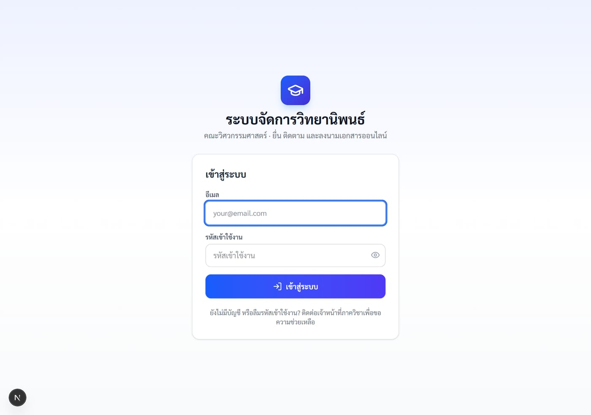
หน้าจอหลัก
ทุกบทบาทเห็นแถบด้านบนแบบเดียวกัน คือ ชื่อระบบและวันที่ปัจจุบันทางซ้าย ชื่อและอีเมลของท่านตรงกลาง และทางขวาเป็นปุ่มเปลี่ยนภาษา (TH/EN) กระดิ่งแจ้งเตือน และปุ่ม Logout
กระดิ่งแจ้งเตือน
ตัวเลขสีแดงคือจำนวนการแจ้งเตือนที่ยังไม่ได้อ่าน กดที่กระดิ่งเพื่อดูความเคลื่อนไหวของคำร้องที่เกี่ยวข้อง รายการ "ถึงคิวของท่าน" จะแสดงเป็นสีส้ม กดที่รายการใดเพื่อไปยังคำร้องนั้นทันที ปุ่ม อ่านทั้งหมด ใช้ทำเครื่องหมายว่าอ่านแล้วทั้งหมด
ทุกครั้งที่ถึงคิวของท่าน ระบบจะส่งอีเมลแจ้งด้วย
ภาษา
ปุ่ม TH แสดงภาษาที่ใช้อยู่ กดเพื่อสลับหน้าจอเป็นภาษาอังกฤษ รวมถึงชื่อแบบฟอร์ม ส่วนข้อมูลที่ผู้ใช้กรอก — ชื่อบุคคล หัวข้อวิทยานิพนธ์ และเลขทะเบียนรถ — ยังคงเป็นภาษาไทย
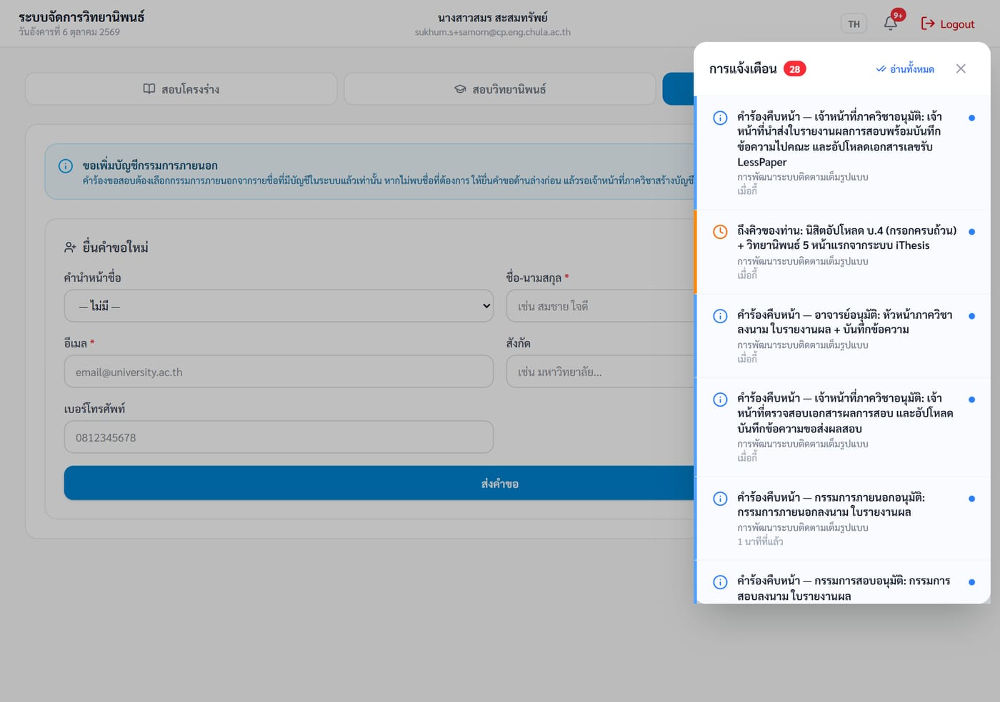
สถานะของคำร้อง
| สถานะ | ความหมาย |
|---|---|
| ฉบับร่าง | นิสิตยังกรอกคำร้องไม่เสร็จ ยังไม่มีผู้อื่นเกี่ยวข้อง |
| กำลังดำเนินการ | คำร้องกำลังเดินตามขั้นตอน |
| ถูกปฏิเสธ | ผู้พิจารณาปฏิเสธขั้นตอนปัจจุบัน รอให้นิสิตแก้ไขและยื่นใหม่ (ดู ถาม–ตอบ) |
| เสร็จสิ้น | ดำเนินการครบทุกขั้นตอนแล้ว |
| ยกเลิกแล้ว | เจ้าหน้าที่ยกเลิกตามคำขอของนิสิต (คำร้องสอบวิทยานิพนธ์ที่ยังไม่เสร็จจะถูกยกเลิกด้วยเมื่อคำร้องสอบโครงร่างที่เป็นต้นทางถูกยกเลิก) |
รายการ "ขั้นตอนทั้งหมด" แสดงทุกขั้นพร้อมสถานะ: เครื่องหมายถูกสีเขียวคืออนุมัติแล้ว นาฬิกาสีน้ำเงินคือขั้นปัจจุบัน สีแดงคือถูกปฏิเสธ และสีเทาคือยังไม่ถึง ขั้นที่มีผู้ลงนามหลายท่าน (เช่น 5.3 กรรมการสอบ) จะแสดงรายชื่อแต่ละท่านและสถานะการลงนาม
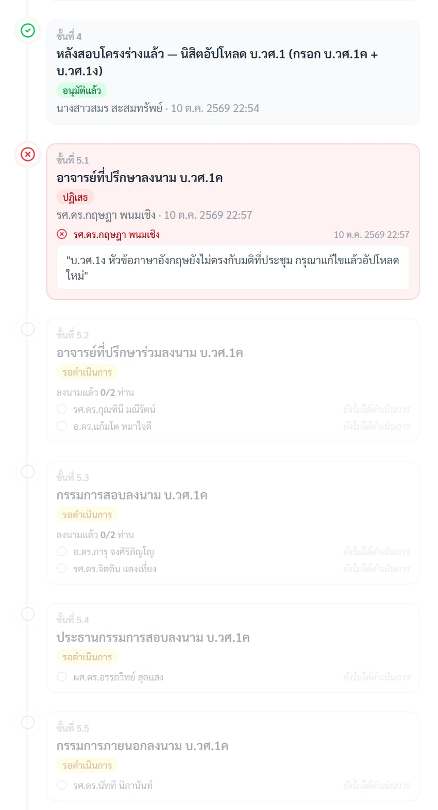
การ์ดดำเนินการ — สิ่งที่ต้องทำเมื่อถึงคิวของท่าน
เมื่อคำร้องรอการดำเนินการจากท่าน จะมีการ์ดกรอบสีน้ำเงินชื่อ ดำเนินการ (หรือชื่อบทบาทของท่าน) ปรากฏทางขวาของหน้าคำร้อง การ์ดของทุกบทบาทมีรูปแบบเดียวกัน จากบนลงล่าง:
- ดาวน์โหลดเอกสาร — ดาวน์โหลดเอกสารฉบับล่าสุดของขั้นนี้
- ลงนามในเอกสาร — ลงนามในไฟล์ที่ดาวน์โหลด แล้วบันทึกเป็นไฟล์ PDF
- อัปโหลดเอกสาร — เลือกไฟล์ PDF ที่ลงนามแล้ว กล่องจะเปลี่ยนเป็นสีน้ำเงินและแสดง "✓ เลือกไฟล์แล้ว" ในขั้นนี้ยังไม่มีการอัปโหลด
- รายการตรวจสอบ (กล่องสีเหลือง) — ทำเครื่องหมายทุกข้อเพื่อยืนยันสิ่งที่ท่านทำ ปุ่มหลักจะกดไม่ได้จนกว่าจะทำเครื่องหมายครบและเลือกไฟล์ที่ต้องใช้ครบ
- หมายเหตุ — ไม่บังคับ ผู้เกี่ยวข้องจะเห็นในลำดับขั้นตอน
- ส่งต่อ (สีเขียว) — อัปโหลดไฟล์และส่งคำร้องให้ผู้ดำเนินการคนถัดไป
ปฏิเสธ (สีแดง) — ปฏิเสธพร้อมระบุเหตุผล นิสิตต้องแก้ไขและยื่นใหม่
เจ้าหน้าที่ภาควิชาจะเห็นปุ่ม อนุมัติ และ ส่งกลับ (ย้อนกลับหนึ่งขั้น) แทน ขั้นของเจ้าหน้าที่ไม่มีปุ่มปฏิเสธ
ส่วนที่ขั้นนั้นไม่ต้องใช้จะไม่แสดง และส่วนที่เหลือจะเรียงลำดับเลขใหม่ เช่น ขั้นตรวจสอบของเจ้าหน้าที่มีเพียง ดาวน์โหลด → รายการตรวจสอบ → อนุมัติ
หน้าแรกของแต่ละบทบาท
นิสิต
มีสามแท็บ คือ สอบโครงร่าง สอบวิทยานิพนธ์ และ กรรมการภายนอก (ขอเพิ่มบัญชีกรรมการภายนอก) เมื่อมีคำร้องสอบวิทยานิพนธ์แล้ว หน้าแรกจะเปิดที่แท็บสอบวิทยานิพนธ์ แต่ละแท็บแสดงรายละเอียดคำร้อง ลำดับขั้นตอน และการ์ดดำเนินการเมื่อถึงคิวของนิสิต ทุกอย่างทำได้ในหน้านี้หน้าเดียว
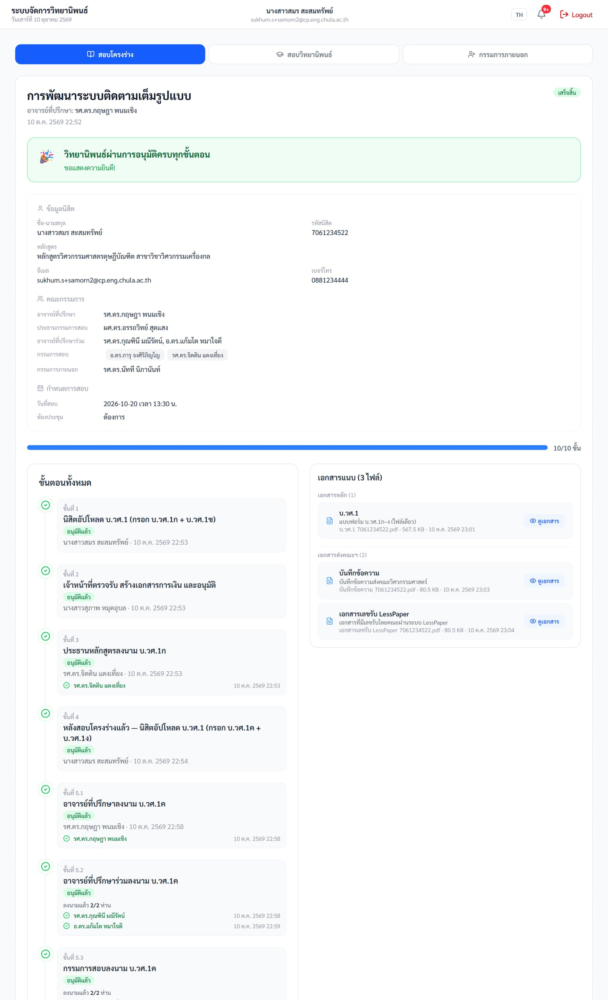
อาจารย์และกรรมการภายนอก
แสดงรายการคำร้องทั้งหมดที่ท่านเกี่ยวข้องไม่ว่าในบทบาทใด พร้อมตัวกรองสถานะ (ทั้งหมด / ฉบับร่าง / กำลังดำเนินการ / เสร็จสิ้น / ถูกปฏิเสธ / ยกเลิกแล้ว) คำร้องที่รอท่านจะอยู่ด้านบนสุด พร้อมป้ายสีส้มระบุชื่อขั้น เมื่อดำเนินการแล้ว ป้ายจะเปลี่ยนเป็น "ท่านอนุมัติแล้ว" กดที่การ์ดเพื่อเปิดคำร้องและการ์ดดำเนินการ
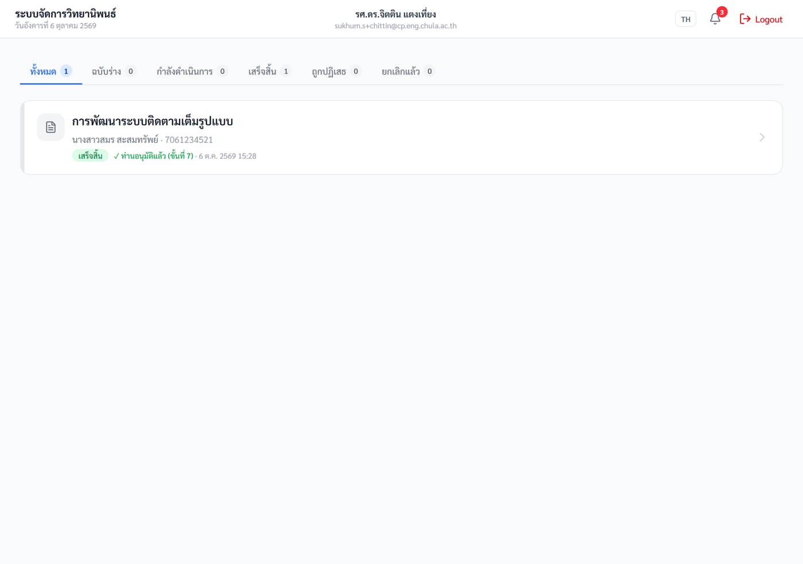
เจ้าหน้าที่ภาควิชา
มีสามแท็บ แท็บ จัดการคำร้อง เริ่มด้วยกล่องสีส้ม "งานที่ต้องดำเนินการ" ซึ่งรวมทุกงานที่รอเจ้าหน้าที่ ตามด้วยรายการคำร้องทั้งหมดพร้อมช่องค้นหาและตัวกรองสถานะ กดที่คำร้องเพื่อขยายดูในหน้าเดิม แท็บ จัดการผู้ใช้งาน ใช้จัดการบัญชีและอนุมัติคำขอบัญชีกรรมการภายนอก (บัญชีอาจารย์แสดงประเภท ME หรือ CU) แท็บ ตั้งค่าระบบ ใช้กำหนดหัวหน้าภาควิชา ประธานหลักสูตรของแต่ละหลักสูตร ผู้รับผิดชอบหลัก ผู้รับเอกสารการเงิน และเงื่อนไขคณะกรรมการ ในหน้าจอต่าง ๆ ขั้นตอนของเจ้าหน้าที่จะแสดงเป็น "เจ้าหน้าที่ภาควิชา" ส่วนผู้รับผิดชอบหลัก คือเจ้าหน้าที่ที่ระบบจะระบุชื่อในกรณีที่ต้องระบุตัวบุคคล (เจ้าหน้าที่ทุกท่านดำเนินการได้ตามปกติ)
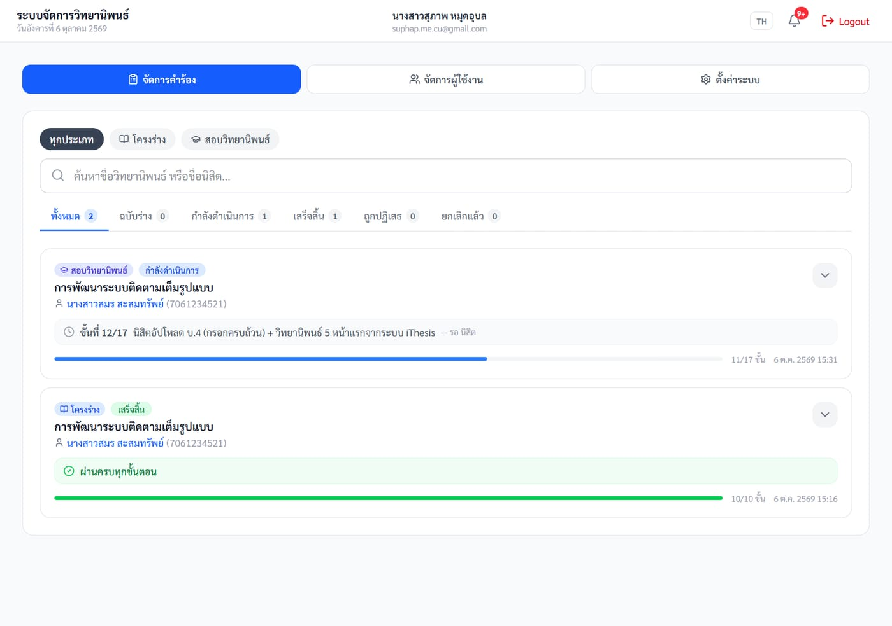
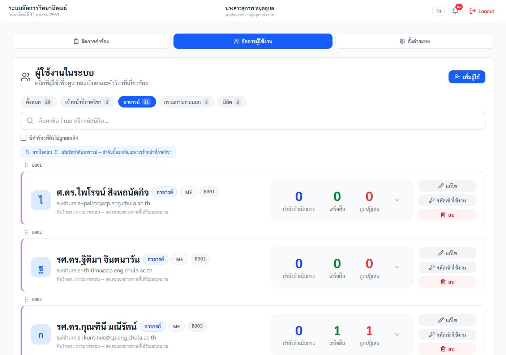
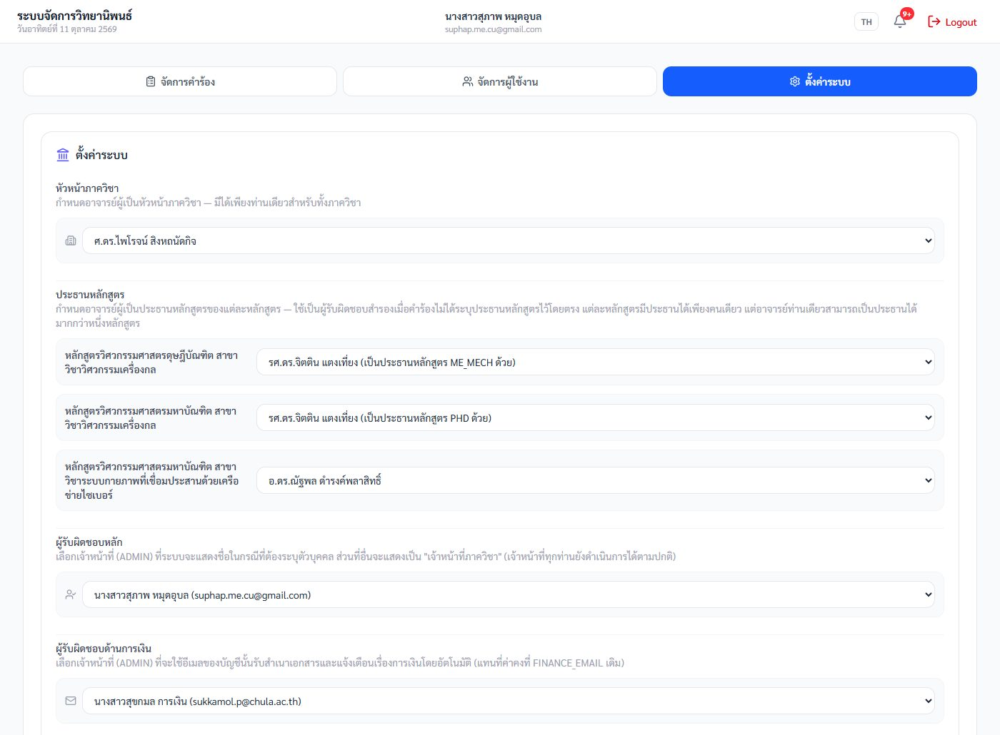
ไฟล์และแบบฟอร์ม
- แบบฟอร์มทุกฉบับที่อัปโหลดต้องเป็นไฟล์ PDF (ไม่เกิน 20 MB) ยกเว้นเอกสารการเงินซึ่งเป็นไฟล์ Word (.docx) และมีเพียงเจ้าหน้าที่ที่จัดการ
- แบบฟอร์มเปล่าดาวน์โหลดได้จากหน้าดาวน์โหลดของภาควิชา me.eng.chula.ac.th/download กล่องอัปโหลดมีลิงก์ไปยังหน้านี้
- ทุกการอัปโหลดคือฉบับใหม่ รายการไฟล์แสดงฉบับล่าสุดของแต่ละแบบฟอร์มเสมอ ฉบับก่อนหน้าเก็บไว้ใน ประวัติ
- กดที่ชื่อไฟล์เพื่อเปิดดูในแท็บใหม่ ส่วนปุ่มดาวน์โหลดในการ์ดดำเนินการจะบันทึกไฟล์ลงเครื่อง
| แบบฟอร์ม | ชื่อเต็ม | ใช้ในขั้นตอน |
|---|---|---|
| บ.วศ.1 (1ก–1ง) | แบบขอเสนอหัวข้อโครงร่างวิทยานิพนธ์ — ไฟล์ PDF เดียวที่มีสี่ส่วน | สอบโครงร่าง ทุกขั้น |
| บ.2 | ขอออกหนังสือเชิญกรรมการสอบ | สอบวิทยานิพนธ์ ขั้นที่ 1, 3 |
| บ.3 | แบบประเมินวิทยานิพนธ์ก่อนสอบ หนึ่งฉบับต่อกรรมการหนึ่งท่าน | สอบวิทยานิพนธ์ ขั้นที่ 1 |
| แบบรายงานการเสนอผลงานฯ | แบบรายงานการเสนอผลงานทางวิชาการของนิสิต | สอบวิทยานิพนธ์ ขั้นที่ 6–7 |
| ใบรายงานผลการสอบ | ใบรายงานผลการสอบวิทยานิพนธ์ | สอบวิทยานิพนธ์ ขั้นที่ 6–11 |
| แบบประเมินวิทยานิพนธ์ดีมาก | แบบประเมินกรณีผลการสอบ ดีมาก | สอบวิทยานิพนธ์ ขั้นที่ 6 |
| บ.4 | ขอให้ลงนามอนุมัติวิทยานิพนธ์ — อัปโหลดเป็นไฟล์ PDF เดียวรวมกับวิทยานิพนธ์ 5 หน้าแรกและเอกสารจากระบบ iThesis | สอบวิทยานิพนธ์ ขั้นที่ 12–15 |
| บันทึกข้อความ | บันทึกข้อความส่งคณะวิศวกรรมศาสตร์ ระบบสร้างให้ | สอบโครงร่าง 8–9, สอบวิทยานิพนธ์ 9–10 |
| เอกสารการเงินแนบกรรมการสอบ | เอกสารการเงินของคณะกรรมการ ระบบสร้างให้ | ขั้นที่ 2 ของทั้งสองประเภท |
| เอกสารเลขรับ LessPaper | เอกสารที่มีเลขรับโดยคณะฯ ผ่านระบบ LessPaper | ขั้นนำส่งของเจ้าหน้าที่ |
ตัวอย่างที่ใช้ในคู่มือ
ภาพหน้าจอทั้งหมดมาจากการใช้งานระบบจริงด้วยบัญชีทดสอบ ตั้งแต่ต้นจนจบ: คำร้องสอบโครงร่างของนิสิตปริญญาเอกหนึ่งราย และคำร้องสอบวิทยานิพนธ์ที่ตามมา
| นิสิต | นางสาวสมร สะสมทรัพย์ · 7061234522 |
|---|---|
| หลักสูตร | วิศวกรรมศาสตรดุษฎีบัณฑิต สาขาวิชาวิศวกรรมเครื่องกล |
| หัวข้อวิทยานิพนธ์ | การพัฒนาระบบติดตามเต็มรูปแบบ |
| อาจารย์ที่ปรึกษา | รศ.ดร.กฤษฎา พนมเชิง |
| อาจารย์ที่ปรึกษาร่วม | รศ.ดร.กุณฑินี มณีรัตน์ → อ.ดร.แก้มโต หมาใจดี (บัญชีกรรมการภายนอก) |
| ประธานหลักสูตร | รศ.ดร.จิตติน แตงเที่ยง (กำหนดอัตโนมัติ) |
| ประธานกรรมการสอบ | ผศ.ดร.อรรถวิทย์ สุดแสง (บัญชีกรรมการภายนอก — บังคับสำหรับปริญญาเอก) |
| กรรมการสอบ | อ.ดร.การุ จงศิริภิญโญ → รศ.ดร.จิตติน แตงเที่ยง |
| กรรมการภายนอก | รศ.ดร.นัทที นิภานันท์ |
| หัวหน้าภาควิชา | ศ.ดร.ไพโรจน์ สิงหถนัดกิจ |
| เจ้าหน้าที่ภาควิชา | นางสาวสุภาพ หมุดอุบล |
ในตัวอย่างนี้ประธานหลักสูตรเป็นกรรมการสอบด้วย ซึ่งทำได้ เพราะประธานหลักสูตรเป็นบุคคลเดียวที่ดำรงตำแหน่งที่สอง ในคณะกรรมการชุดเดียวกันได้
ส่วนที่ 2ขั้นตอนสอบโครงร่างวิทยานิพนธ์
การสอบโครงร่างมี 10 ขั้นตอน ขั้นที่ 1–3 เกี่ยวกับ บ.วศ.1ก และ 1ข ก่อนการสอบ การสอบโครงร่างจัดขึ้นนอกระบบ ระหว่างขั้นที่ 3 และขั้นที่ 4 ส่วนขั้นที่ 4–10 เกี่ยวกับ บ.วศ.1ค และ 1ง หลังการสอบ แต่ละหัวข้อด้านล่างบอกว่าใครเป็นผู้ดำเนินการ ต้องทำอะไร และผู้อื่นเห็นอะไรในระหว่างนั้น
ภาพรวมขั้นตอน
| ขั้น | ผู้ดำเนินการ | สิ่งที่ทำ |
|---|---|---|
| 1 | นิสิต | อัปโหลด บ.วศ.1 ที่กรอก 1ก + 1ข แล้ว (นิสิตและอาจารย์ที่ปรึกษาลงนามแล้ว) |
| 2 | เจ้าหน้าที่ | ตรวจสอบ สร้างเอกสารการเงิน แล้วอนุมัติ → ระบบส่งอีเมลถึงฝ่ายการเงิน |
| 3 | ประธานหลักสูตร | ลงนาม บ.วศ.1ก |
| — สอบโครงร่างวิทยานิพนธ์ (นอกระบบ) — | ||
| 4 | นิสิต | กรอก บ.วศ.1ค + 1ง แล้วอัปโหลด |
| 5.1 | อาจารย์ที่ปรึกษา | ลงนาม บ.วศ.1ค |
| 5.2 | อาจารย์ที่ปรึกษาร่วม | ลงนาม บ.วศ.1ค ทีละท่าน (ข้ามไปหากไม่มี) |
| 5.3 | กรรมการสอบ | ลงนาม บ.วศ.1ค ทีละท่าน |
| 5.4 | ประธานกรรมการสอบ | บันทึกผล ผ่าน/ไม่ผ่าน และลงนาม บ.วศ.1ค |
| 5.5 | กรรมการภายนอก | ลงนาม บ.วศ.1ค ทีละท่าน |
| 6 | เจ้าหน้าที่ | ตรวจเอกสารที่ลงนามครบ และแก้ไขชื่อหัวข้อวิทยานิพนธ์ในระบบ |
| 7 | ประธานหลักสูตร | ลงนาม บ.วศ.1ค + 1ง |
| 8 | เจ้าหน้าที่ | สร้างบันทึกข้อความ แล้วอัปโหลดเป็น PDF |
| 9 | หัวหน้าภาควิชา | ลงนามบันทึกข้อความ |
| 10 | เจ้าหน้าที่ | นำส่งคณะฯ และอัปโหลดเอกสารเลขรับ LessPaper → เสร็จสิ้น |
ตลอดการสอบโครงร่าง นิสิตและคณะกรรมการใช้ไฟล์ PDF เดียวกัน คือ บ.วศ.1 (1ก–1ง) ผู้ลงนามแต่ละท่าน ดาวน์โหลดฉบับล่าสุด ลงนามในส่วนของตน แล้วอัปโหลดกลับเป็นฉบับถัดไป
การสร้างคำร้อง นิสิต
ในแท็บ สอบโครงร่าง นิสิตที่ยังไม่มีคำร้องจะเห็นแบบฟอร์มเปล่าเป็นสีจาง เพื่อให้เห็นว่าต้องกรอกอะไรบ้าง กด + สร้างร่างคำร้อง เพื่อเริ่มฉบับร่าง
- ข้อมูลวิทยานิพนธ์ — ชื่อหัวข้อวิทยานิพนธ์
- ข้อมูลนิสิต — เลือกหลักสูตร ระบบจะแสดงประธานหลักสูตรให้อัตโนมัติ ชื่อ รหัสนิสิต และอีเมลมาจากบัญชี ให้กรอกเบอร์โทรศัพท์เพิ่ม
- ผู้รับผิดชอบวิทยานิพนธ์ — คณะกรรมการ (ดูหัวข้อถัดไป)
- ข้อมูลการสอบ — วันและเวลาสอบ และความต้องการห้องประชุมหรือที่จอดรถสำหรับกรรมการภายนอก
ปุ่ม บันทึกฉบับร่าง บันทึกข้อมูลที่กรอกไว้ ออกจากหน้าแล้วกลับมาทำต่อได้ ระบบจะยังไม่ส่งให้ใคร จนกว่าท่านจะทำเครื่องหมายยืนยันและกด ยืนยัน — ขอสอบโครงร่างวิทยานิพนธ์
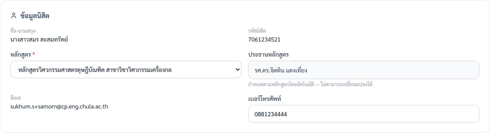
การเลือกคณะกรรมการ
แต่ละแถวคือบุคคลหนึ่งท่าน เลือกบทบาททางซ้าย แล้วเลือกบุคคลทางขวา เลือกได้เฉพาะผู้ที่มีบัญชีในระบบแล้วเท่านั้น ใช้ + เพิ่มบุคคล เพื่อเพิ่มแถว และ × เพื่อลบแถว
- จำนวนบุคคลในแต่ละตำแหน่งเป็นไปตามเงื่อนไขที่เจ้าหน้าที่ตั้งไว้ ค่าเริ่มต้นคือ อาจารย์ที่ปรึกษา 1 ท่าน ประธานกรรมการสอบ 1 ท่าน กรรมการสอบอย่างน้อย 1 ท่าน และกรรมการภายนอกอย่างน้อย 1 ท่าน อาจารย์ที่ปรึกษาร่วมไม่บังคับ ป้ายสีเขียวด้านบนจะขึ้นเครื่องหมายถูกเมื่อครบแต่ละข้อ
- ลำดับแถวคือลำดับการลงนาม หากมีหลายท่านในบทบาทเดียวกัน จะลงนามตามลำดับแถว ลากที่จับด้านซ้ายของแถว (⋮⋮) เพื่อเปลี่ยนลำดับ
- ข้อความใต้แต่ละแถว ("เลือกจาก: …") บอกประเภทบัญชีที่บทบาทนั้นรับ (อาจารย์ ME, อาจารย์ CU หรือกรรมการภายนอก) ซึ่งอาจต่างกันระหว่างปริญญาโทและปริญญาเอก ตามค่าเริ่มต้น ประธานกรรมการสอบของปริญญาเอกต้องเป็นกรรมการภายนอก ดู ถาม–ตอบ
- หนึ่งคนหนึ่งตำแหน่ง ยกเว้นประธานหลักสูตรซึ่งดำรงตำแหน่งอื่นได้อีกหนึ่งตำแหน่ง
- หากไม่พบชื่อกรรมการภายนอกในรายชื่อ ให้ยื่นคำขอเพิ่มบัญชีที่แท็บ กรรมการภายนอก ก่อน (ดู ถาม–ตอบ)
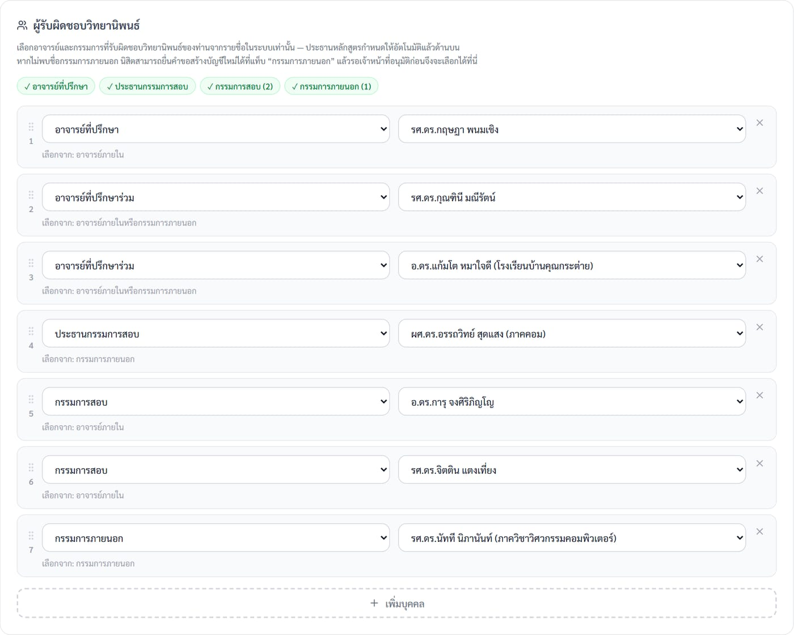
ข้อมูลการสอบและการยืนยัน
กรอกวันและเวลาสอบที่วางแผนไว้ ทำเครื่องหมายยืนยัน แล้วกด ยืนยัน — ขอสอบโครงร่างวิทยานิพนธ์ คำร้องจะเปลี่ยนเป็น กำลังดำเนินการ และขั้นที่ 1 จะเปิดให้นิสิตดำเนินการ
หากเปลี่ยนใจก่อนยืนยัน ปุ่ม ไม่ต้องการยื่นขอสอบโครงร่างวิทยานิพนธ์ตอนนี้ จะยกเลิกฉบับร่าง
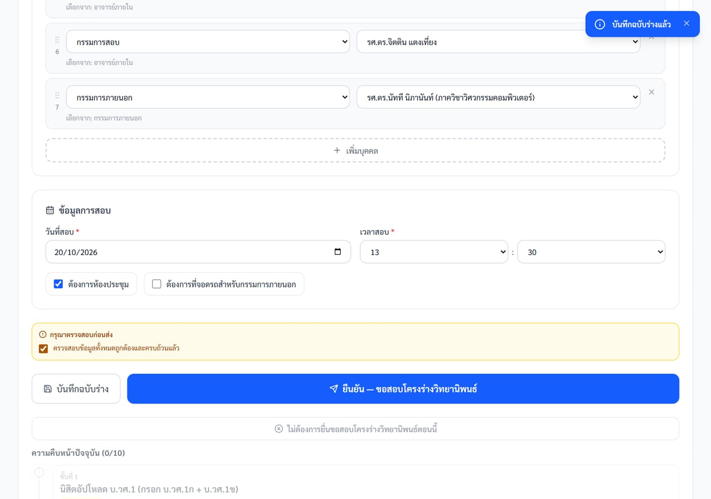
ขั้นที่ 1–3 · บ.วศ.1ก + 1ข
อัปโหลด บ.วศ.1
นิสิตนิสิตอัปโหลด บ.วศ.1 (กรอก บ.วศ.1ก + บ.วศ.1ข)
- ก่อนเริ่ม
- กรอกส่วน 1ก และ 1ข ในแบบฟอร์ม ลงนามทั้งสองส่วน และให้อาจารย์ที่ปรึกษาลงนามใน 1ก — บนกระดาษหรือแบบอิเล็กทรอนิกส์ นอกระบบ
- ในระบบ
- เลือกไฟล์ PDF ทำเครื่องหมายรายการตรวจสอบ 5 ข้อ แล้วกด ส่งต่อ
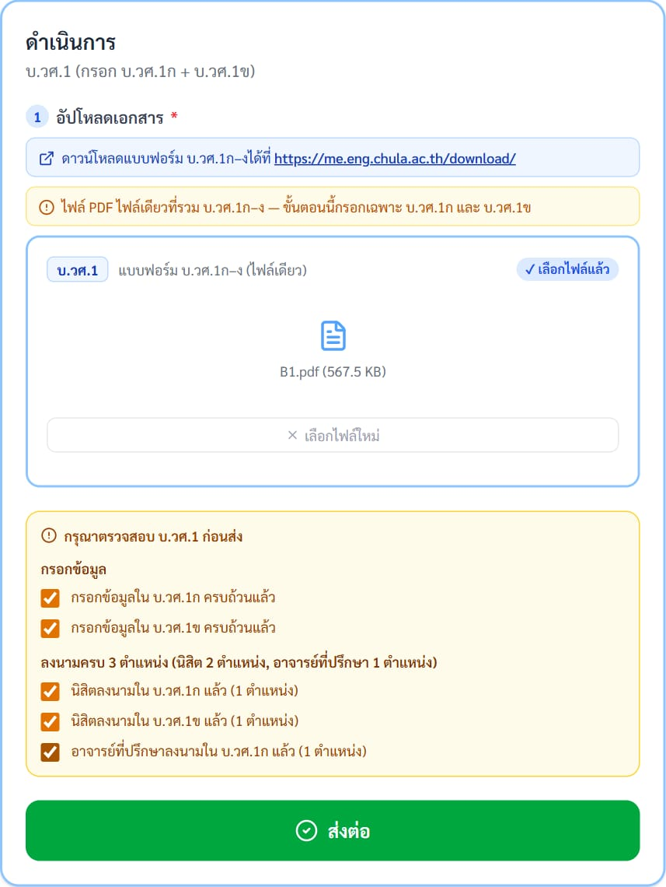
ตรวจสอบและสร้างเอกสารการเงิน
เจ้าหน้าที่เจ้าหน้าที่ตรวจรับ สร้างเอกสารการเงิน และอนุมัติ
- เปิดคำร้อง (จากกล่องงานที่ต้องดำเนินการ) ดาวน์โหลด บ.วศ.1 แล้วตรวจสอบ
- ในการ์ด เอกสารการเงินแนบกรรมการสอบ กด สร้างเอกสารการเงินแนบกรรมการสอบ ระบบจะกรอกแบบฟอร์มการเงินของภาควิชาด้วยข้อมูลนิสิตและรายชื่อกรรมการทีละแถว หากต้องการแก้ไข ให้ดาวน์โหลด แก้ไขใน Word แล้วอัปโหลดด้วยปุ่ม เปลี่ยนไฟล์ ระบบเก็บเฉพาะฉบับล่าสุด
- ทำเครื่องหมายรายการตรวจสอบ 6 ข้อ แล้วกด อนุมัติ
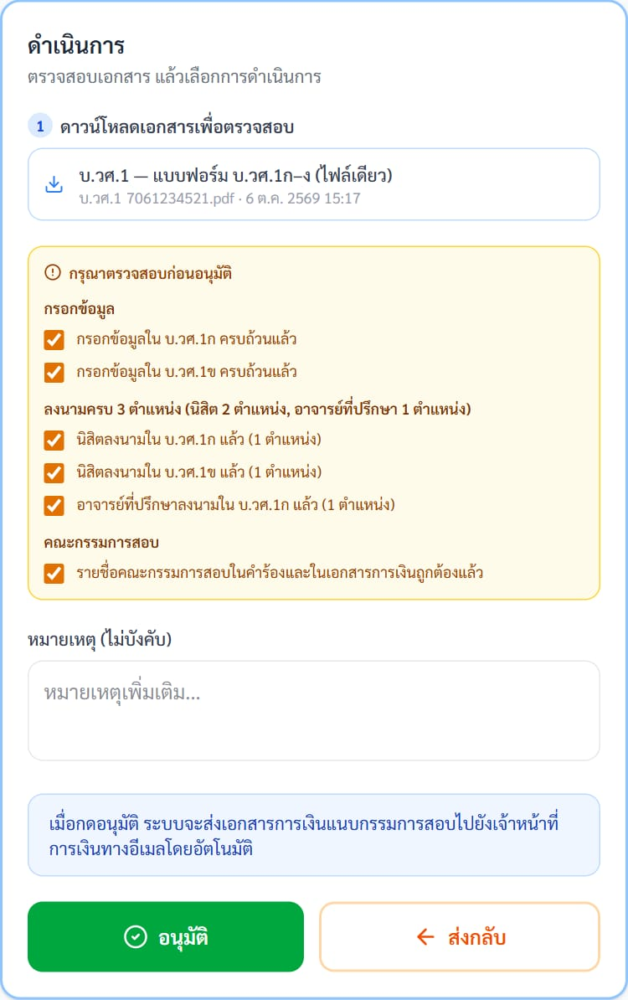
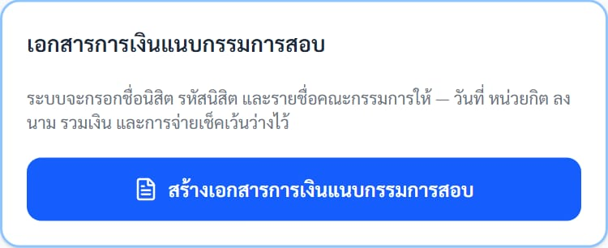
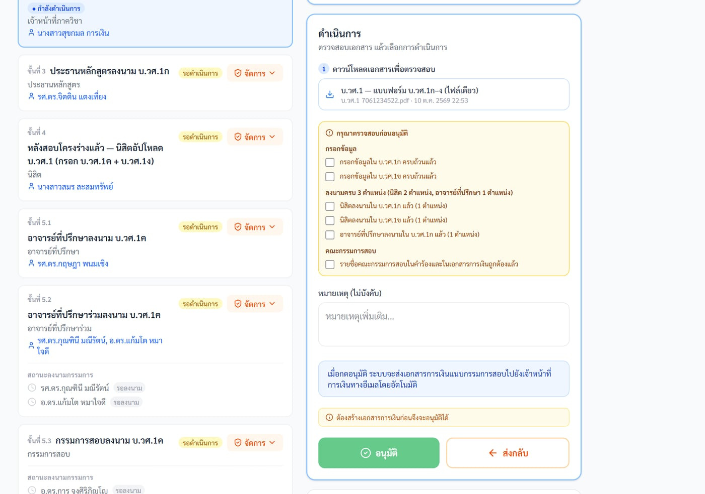
ประธานหลักสูตรลงนาม บ.วศ.1ก
ประธานหลักสูตรประธานหลักสูตรลงนาม บ.วศ.1ก
ดาวน์โหลด บ.วศ.1 ลงนามในส่วน 1ก (หนึ่งตำแหน่ง) อัปโหลดไฟล์ที่ลงนามแล้ว ทำเครื่องหมาย แล้วกด ส่งต่อ

ขั้นที่ 4 · หลังสอบโครงร่าง
กรอก บ.วศ.1ค + 1ง
นิสิตหลังสอบโครงร่างแล้ว — นิสิตอัปโหลด บ.วศ.1 (กรอก บ.วศ.1ค + บ.วศ.1ง)
- ดาวน์โหลด บ.วศ.1 ฉบับล่าสุด ซึ่งมีลายมือชื่อประธานหลักสูตรแล้ว
- กรอก 1ค และ 1ง ตามความเห็นของคณะกรรมการในการสอบ พิมพ์รายชื่อคณะกรรมการ แต่เว้นช่องลงนามและวันที่ทั้งหมดว่างไว้
- ตรวจสอบให้หัวข้อวิทยานิพนธ์ใน 1ง ตรงกับที่คณะกรรมการเห็นชอบทุกตัวอักษร เพราะหัวข้อนี้จะถูกส่งไปยังคณะฯ และลงทะเบียนในระบบของจุฬาฯ ตามที่เขียนไว้
- อัปโหลดเป็นฉบับใหม่ ทำเครื่องหมายรายการตรวจสอบ 9 ข้อ แล้วกด ส่งต่อ
ไฟล์ที่อัปโหลดต้องใหม่กว่าการลงนามของประธานหลักสูตร ไฟล์เก่าจะไม่นับ
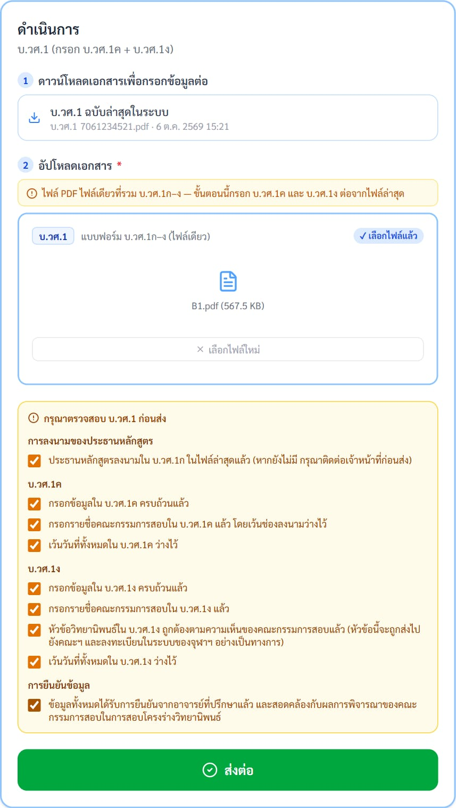
ขั้นที่ 5.1–5.5 · คณะกรรมการลงนาม บ.วศ.1ค
ขั้นที่ 5 เป็นขั้นเดียวที่มีขั้นย่อยตามบทบาทของคณะกรรมการ เรียงตามลำดับที่กำหนดไว้ กรรมการแต่ละท่านลงนาม หนึ่งตำแหน่งใน บ.วศ.1ค ตามลำดับ: อาจารย์ที่ปรึกษา → อาจารย์ที่ปรึกษาร่วม → กรรมการสอบ → ประธานกรรมการสอบ → กรรมการภายนอก บทบาทที่มีหลายท่านจะลงนามทีละท่านตามลำดับที่นิสิตกำหนด และแต่ละท่านจะได้รับแจ้งเมื่อถึงคิวของตนเท่านั้น
อาจารย์ที่ปรึกษา
คณะกรรมการอาจารย์ที่ปรึกษาลงนาม บ.วศ.1ค
การ์ดเหมือนของประธานหลักสูตร: ดาวน์โหลด ลงนาม อัปโหลด ทำเครื่องหมาย แล้วกด ส่งต่อ หากเอกสารไม่ถูกต้อง ให้กด ปฏิเสธ และระบุสิ่งที่ต้องแก้ไข ในตัวอย่างนี้อาจารย์ที่ปรึกษาได้ปฏิเสธหนึ่งครั้ง ดู ถาม–ตอบ: ขั้นตอนถูกปฏิเสธ
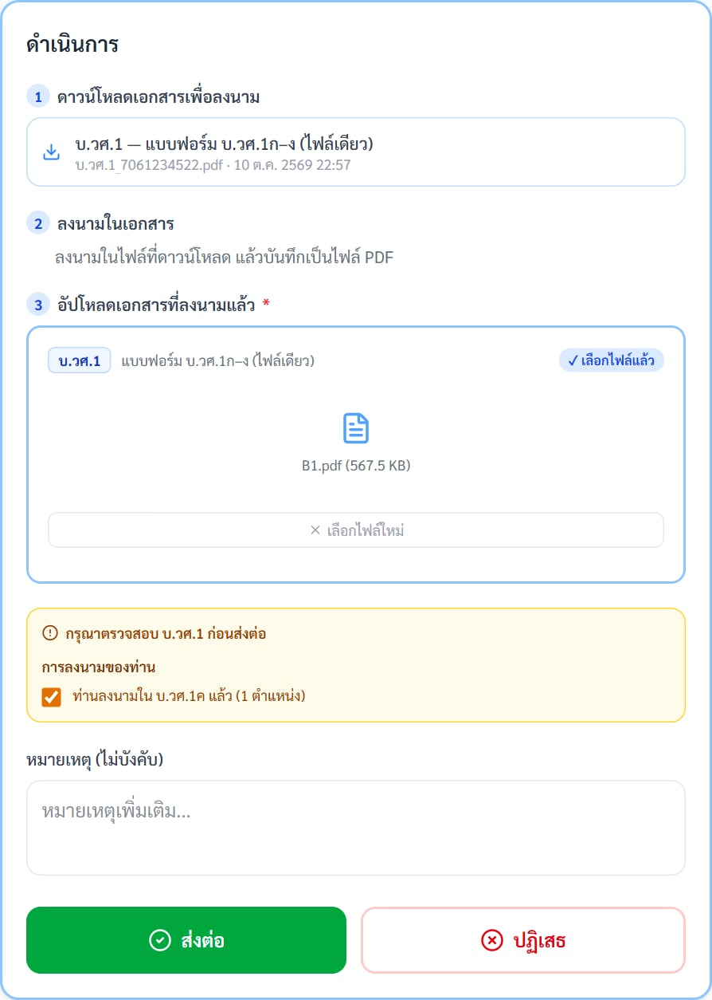
อาจารย์ที่ปรึกษาร่วม ตามลำดับ
คณะกรรมการอาจารย์ที่ปรึกษาร่วมลงนาม บ.วศ.1ค
การ์ดของขั้นที่มีหลายท่านจะใช้ชื่อบทบาทเป็นหัวข้อ แสดงความคืบหน้า (ลงนาม 0/2) และรายชื่อกรรมการ ท่านที่ถึงคิวจะมีคำว่า (ท่าน) และ กำลังรอ ท่านที่ยังไม่ถึงคิวจะเห็นรายชื่อเดียวกันพร้อมข้อความให้รอ และยังกดปุ่มไม่ได้
หากนิสิตไม่ได้ระบุอาจารย์ที่ปรึกษาร่วม ขั้นย่อยนี้จะถูกข้ามทั้งหมดและไม่นับลำดับเลข
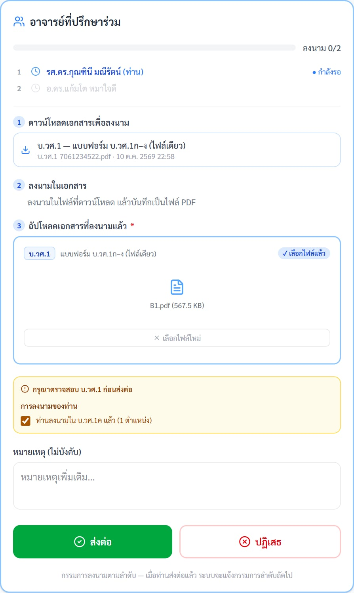
ประธานกรรมการสอบ
คณะกรรมการประธานกรรมการสอบลงนาม บ.วศ.1ค
เลือกผลการสอบ ผ่าน หรือ ไม่ผ่าน ผลนี้จะบันทึกไว้ในลำดับขั้นตอนให้ทุกคนเห็น จากนั้นดาวน์โหลด ลงนาม บ.วศ.1ค อัปโหลด ทำเครื่องหมาย แล้วกด ส่งต่อ
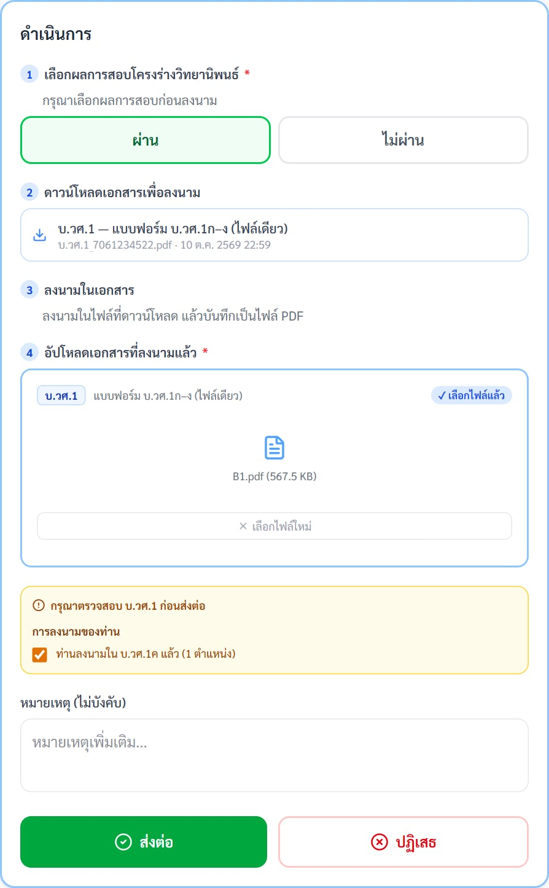
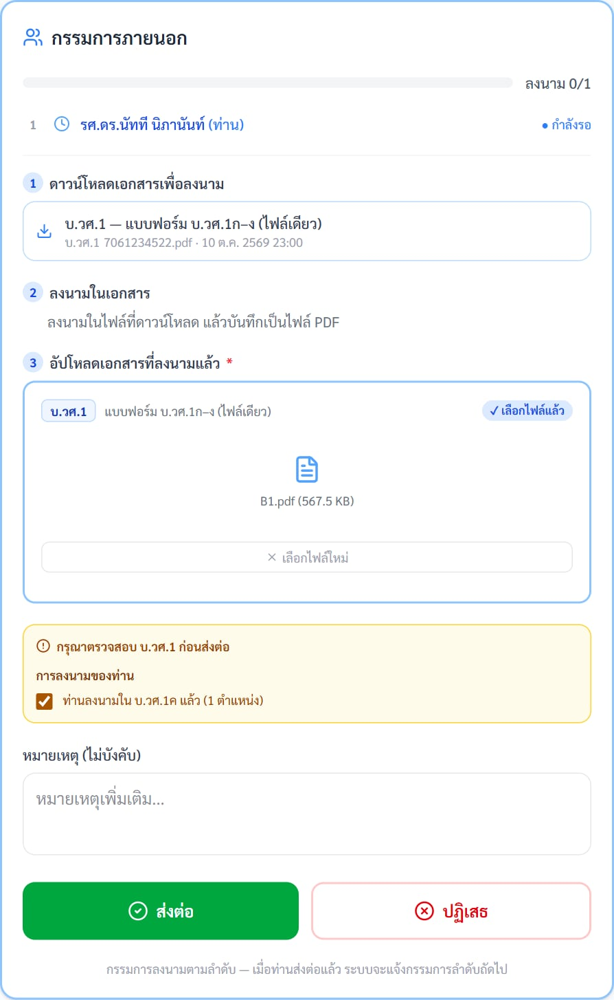
ขั้นที่ 6–10 · จากภาควิชาสู่คณะฯ
เจ้าหน้าที่ตรวจสอบ (รอบ 2)
เจ้าหน้าที่เจ้าหน้าที่ตรวจสอบ (รอบ 2)
ดาวน์โหลด บ.วศ.1 ที่ลงนามครบแล้ว และตรวจว่ากรรมการลงนามใน 1ค ครบทุกท่าน 1ค และ 1ง ครบถ้วน และหัวข้อใน 1ง ตรงตามความเห็นของคณะกรรมการ
หากต้องให้ทำใหม่ ปุ่ม ส่งกลับ จะส่งคำร้องกลับไปยังผู้ลงนามก่อนหน้า
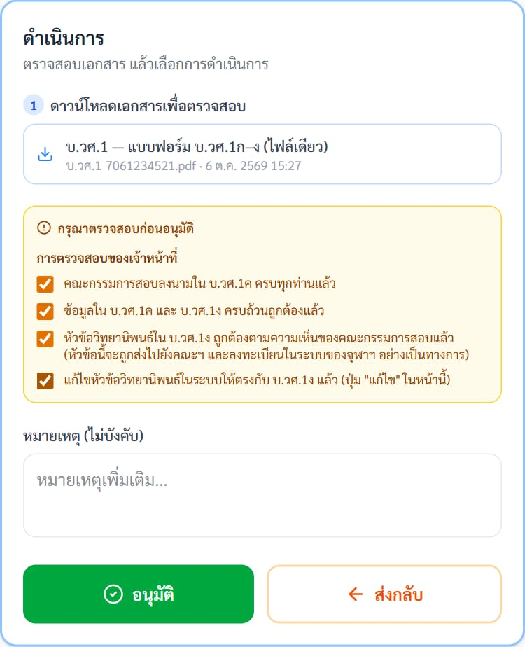
ประธานหลักสูตรลงนาม 1ค + 1ง
ประธานหลักสูตรประธานหลักสูตรลงนาม บ.วศ.1ค + บ.วศ.1ง
ดาวน์โหลด ลงนามใน บ.วศ.1ค และ บ.วศ.1ง (แห่งละหนึ่งตำแหน่ง) อัปโหลด ทำเครื่องหมายทั้งสองข้อ แล้วกด ส่งต่อ
สร้างบันทึกข้อความ
เจ้าหน้าที่เจ้าหน้าที่ตรวจสอบเอกสารทั้งหมด และอัปโหลดบันทึกข้อความส่งคณะฯ
- กด สร้างบันทึกข้อความ ระบบจะกรอกบันทึกข้อความแบบหัวกระดาษภาควิชาด้วยวันที่ปัจจุบัน ชื่อนิสิต หลักสูตร หัวข้อ และชื่อหัวหน้าภาควิชา และแสดงข้อมูลที่ใช้กรอก
- กด ดาวน์โหลดบันทึกข้อความ (.docx) ตรวจสอบใน Word แล้วบันทึกเป็น PDF (หากข้อมูลผิด ให้แก้ไขในคำร้องแล้วกด สร้างใหม่จากข้อมูลในระบบ)
- เลือกไฟล์ PDF ในกล่องอัปโหลด (ยังไม่ลงนาม) ทำเครื่องหมาย 3 ข้อ แล้วกด อนุมัติ
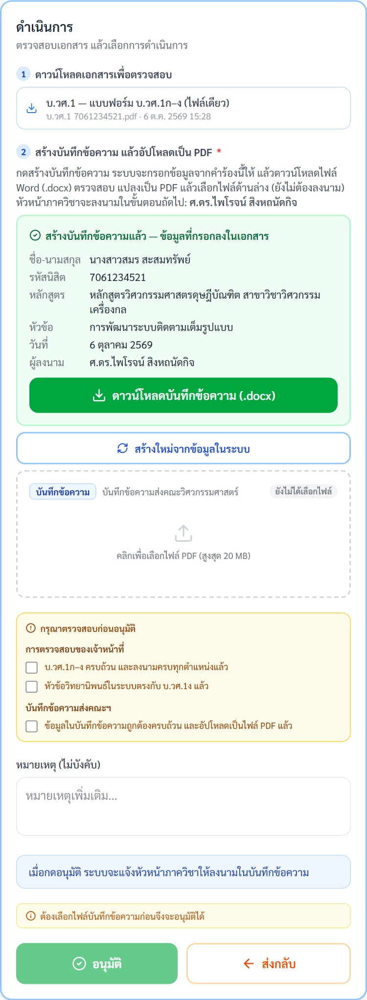
หัวหน้าภาควิชาลงนามบันทึกข้อความ
หัวหน้าภาควิชาหัวหน้าภาควิชาลงนามบันทึกข้อความ
ดาวน์โหลดบันทึกข้อความ ลงนาม อัปโหลดไฟล์ PDF ที่ลงนามแล้ว (แทนฉบับที่ยังไม่ลงนาม) ทำเครื่องหมาย แล้วกด ส่งต่อ
นำส่งคณะฯ
เจ้าหน้าที่เจ้าหน้าที่นำส่งคณะฯ และอัปโหลดเอกสารเลขรับ LessPaper
นำส่ง บ.วศ.1 และบันทึกข้อความที่ลงนามแล้ว (ทั้งสองไฟล์อยู่ในส่วน ①) ไปยังคณะฯ ผ่านระบบ LessPaper อัปโหลดเอกสารที่มีเลขรับจากคณะฯ ทำเครื่องหมาย 3 ข้อ แล้วกด อนุมัติ
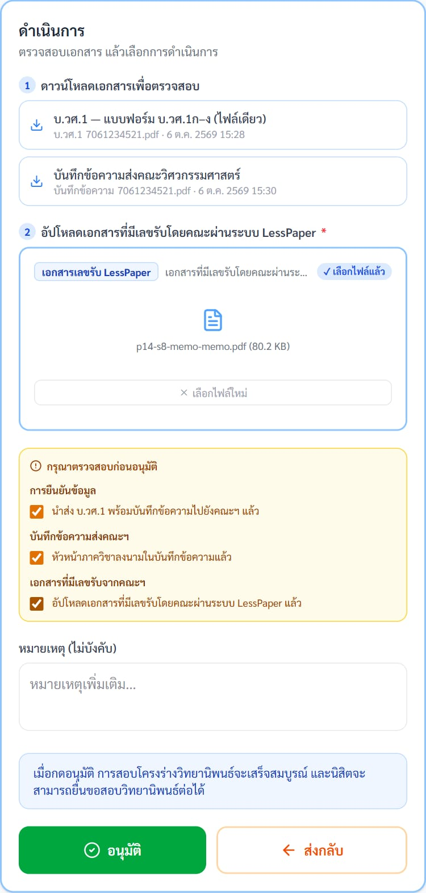
ส่วนที่ 3ขั้นตอนสอบวิทยานิพนธ์
การสอบวิทยานิพนธ์มี 17 ขั้นตอน ขั้นที่ 1–5 เตรียมการสอบ (ส่ง บ.2 และ บ.3 ไปคณะฯ) การสอบจัดขึ้นระหว่างขั้นที่ 5 และขั้นที่ 6 ขั้นที่ 6–11 ส่งผลการสอบ และขั้นที่ 12–17 ส่งวิทยานิพนธ์และปิดท้ายในระบบ iThesis
ภาพรวมขั้นตอน
| ขั้น | ผู้ดำเนินการ | สิ่งที่ทำ |
|---|---|---|
| 1 | นิสิต | อัปโหลด บ.2 (นิสิต อาจารย์ที่ปรึกษา และประธานกรรมการสอบลงนามแล้ว) + บ.3 ของกรรมการทุกท่าน |
| 2 | เจ้าหน้าที่ | ตรวจสอบ สร้างเอกสารการเงิน แล้วอนุมัติ → ระบบส่งอีเมลถึงฝ่ายการเงิน |
| 3 | ประธานหลักสูตร | ลงนาม บ.2 |
| 4 | เจ้าหน้าที่ | นำส่ง บ.2 + บ.3 ไปคณะฯ และอัปโหลดเอกสารเลขรับ LessPaper |
| 5 | เจ้าหน้าที่ | ส่งต่ออีเมลจากคณะฯ ให้นิสิต แล้วยืนยัน |
| — สอบวิทยานิพนธ์ (นอกระบบ) — | ||
| 6 | นิสิต | อัปโหลดแบบรายงานฯ (ลงนามแล้ว) ใบรายงานผลการสอบ (ฉบับว่าง) และแบบประเมินดีมาก |
| 7 | อาจารย์ที่ปรึกษา | เลือกผลการสอบ ลงนามแบบรายงานฯ กรอกและลงนามใบรายงานผลการสอบ |
| 8.1 | อาจารย์ที่ปรึกษาร่วม | ลงนามใบรายงานผลการสอบ ตามลำดับ (ข้ามไปหากไม่มี) |
| 8.2 | กรรมการสอบ | ลงนามใบรายงานผลการสอบ ตามลำดับ |
| 8.3 | ประธานกรรมการสอบ | ลงนามใบรายงานผลการสอบ |
| 8.4 | กรรมการภายนอก | ลงนามใบรายงานผลการสอบ ตามลำดับ |
| 9 | เจ้าหน้าที่ | ตรวจสอบ สร้างบันทึกข้อความขอส่งผลสอบ แล้วอัปโหลดเป็น PDF |
| 10 | หัวหน้าภาควิชา | ลงนามใบรายงานผลการสอบ + บันทึกข้อความ |
| 11 | เจ้าหน้าที่ | นำส่งคณะฯ และอัปโหลดเอกสารเลขรับ LessPaper |
| 12 | นิสิต | อัปโหลด บ.4 + วิทยานิพนธ์ 5 หน้าแรก + เอกสารจากระบบ iThesis รวมเป็นไฟล์ PDF เดียว |
| 13 | เจ้าหน้าที่ | ตรวจสอบไฟล์ บ.4 + วิทยานิพนธ์ + เอกสารจากระบบ iThesis |
| 14 | หัวหน้าภาควิชา | ลงนามเฉพาะหน้า บ.4 แล้วอัปโหลดทั้งไฟล์กลับ |
| 15 | เจ้าหน้าที่ | นำส่งไฟล์ บ.4 ไปคณะฯ และอัปโหลดเอกสารเลขรับ LessPaper |
| 16 | เจ้าหน้าที่ | ส่งต่อเอกสารจากคณะฯ (คณบดีลงนามแล้ว) ให้นิสิต |
| 17 | นิสิต | ยืนยันว่าส่งเอกสารเข้าระบบ iThesis ครบแล้ว → เสร็จสิ้น |
การสร้างคำร้อง นิสิต
เมื่อการสอบโครงร่างเสร็จสิ้นแล้ว การเปิดแท็บ สอบวิทยานิพนธ์ จะสร้างฉบับร่างให้อัตโนมัติ โดยนำหัวข้อ ข้อมูลนิสิต และคณะกรรมการทั้งหมดมาจากคำร้องสอบโครงร่าง
- ยังแก้ไขคณะกรรมการได้ — เพิ่ม ลบ หรือเรียงลำดับใหม่ได้เช่นเดียวกับการสอบโครงร่าง การแก้ไขมีผลเฉพาะคำร้องสอบวิทยานิพนธ์ คำร้องสอบโครงร่างที่เสร็จแล้วจะไม่ถูกเปลี่ยน
- ข้อมูลนิสิตและหลักสูตรมาจากคำร้องสอบโครงร่าง และแก้ไขในหน้านี้ไม่ได้
- กรอกวันและเวลาสอบวิทยานิพนธ์ ความต้องการห้องประชุมและที่จอดรถ (พร้อมเลขทะเบียนรถหากต้องการที่จอดรถ) ทำเครื่องหมายยืนยัน แล้วกด ยืนยัน — ขอสอบวิทยานิพนธ์
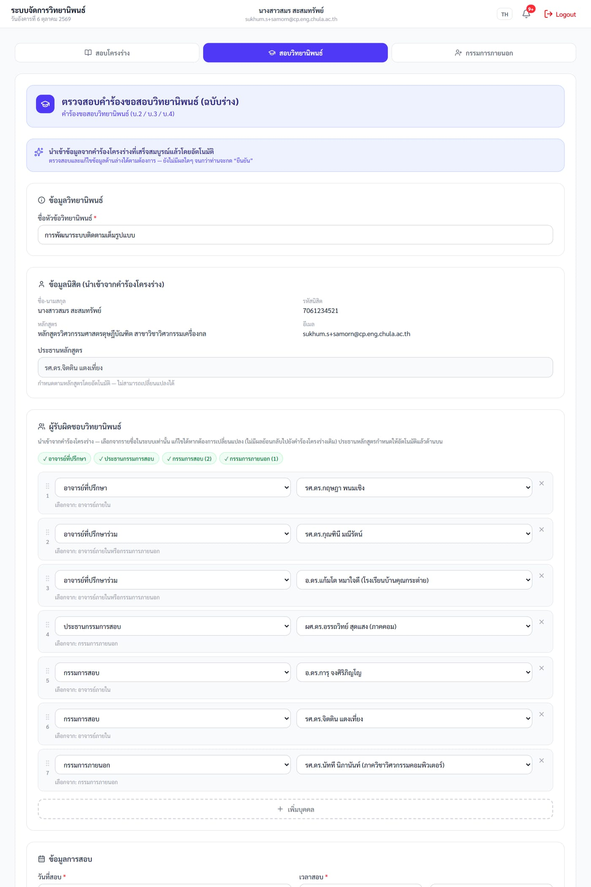
ขั้นที่ 1–5 · ก่อนสอบ
อัปโหลด บ.2 + บ.3 ทุกฉบับ
นิสิตนิสิตอัปโหลด บ.2 + บ.3 ของกรรมการทุกท่าน
- บ.2
- กรอกครบถ้วน และลงนามโดยนิสิต อาจารย์ที่ปรึกษา และประธานกรรมการสอบ — นอกระบบ เว้นช่องลงนามของประธานหลักสูตรว่างไว้ ประธานหลักสูตรจะลงนามในขั้นที่ 3
- บ.3
- หนึ่งฉบับต่อกรรมการหนึ่งท่าน นิสิตกรอกข้อมูลของตน หัวข้อ รายชื่อคณะกรรมการ และวันที่ นิสิตและอาจารย์ที่ปรึกษาติดต่อกรรมการแต่ละท่านเพื่อประเมินและลงนาม ส่วนอัปโหลดจะแสดงกล่องหนึ่งกล่องต่อกรรมการหนึ่งท่าน พร้อมชื่อและบทบาท
ทำเครื่องหมายรายการตรวจสอบ 9 ข้อ แล้วกด ส่งต่อ ระบบจะไม่รับขั้นนี้จนกว่าจะมี บ.3 ของกรรมการครบทุกท่าน
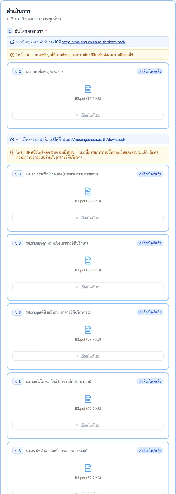
ตรวจสอบและสร้างเอกสารการเงิน
เจ้าหน้าที่เจ้าหน้าที่ตรวจรับ สร้างเอกสารการเงิน และอนุมัติ
เหมือนขั้นที่ 2 ของการสอบโครงร่าง: สร้างเอกสารการเงิน (แก้ไขและอัปโหลดใหม่ได้หากจำเป็น) ตรวจ บ.2 และ บ.3 ทุกฉบับ แล้วกด อนุมัติ การอนุมัติจะส่งอีเมลเอกสารการเงินถึงผู้รับเอกสารการเงิน
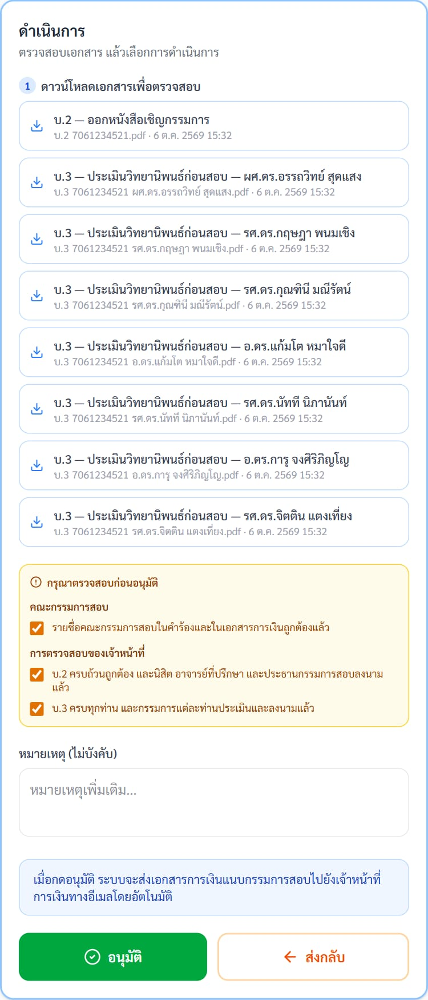
ประธานหลักสูตรลงนาม บ.2
ประธานหลักสูตรประธานหลักสูตรลงนาม บ.2
ดาวน์โหลด บ.2 ลงนาม อัปโหลด ทำเครื่องหมาย แล้วกด ส่งต่อ
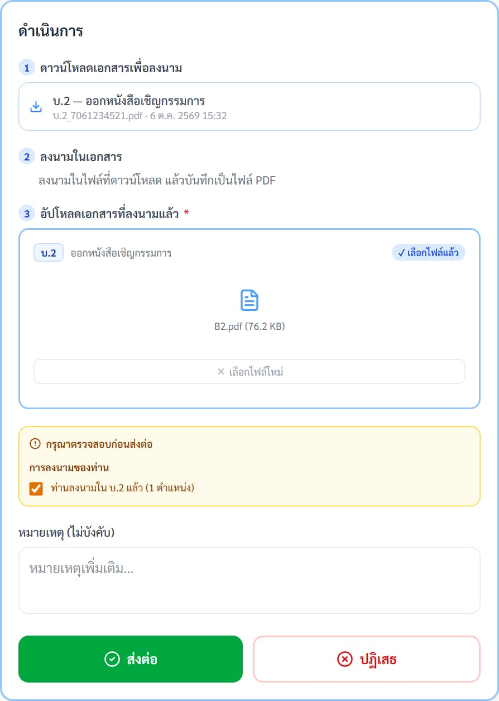
นำส่ง บ.2 + บ.3 ไปคณะฯ
เจ้าหน้าที่เจ้าหน้าที่นำส่ง บ.2 + บ.3 ไปคณะ และอัปโหลดเอกสารเลขรับ LessPaper
นำส่งเอกสารผ่านระบบ LessPaper อัปโหลดเอกสารที่มีเลขรับจากคณะฯ ทำเครื่องหมาย แล้วกด อนุมัติ
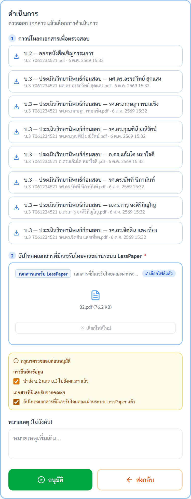
ส่งต่ออีเมลจากคณะฯ
เจ้าหน้าที่เจ้าหน้าที่ส่งต่ออีเมลจากคณะให้นิสิต
เมื่อคณะฯ ตอบกลับพร้อมเอกสารการสอบ (ใบรายงานผลการสอบ แบบรายงานฯ หนังสือเชิญ) ให้ส่งต่ออีเมลนั้นให้นิสิตนอกระบบ แล้วยืนยันในระบบ ขั้นนี้ไม่มีการอัปโหลด
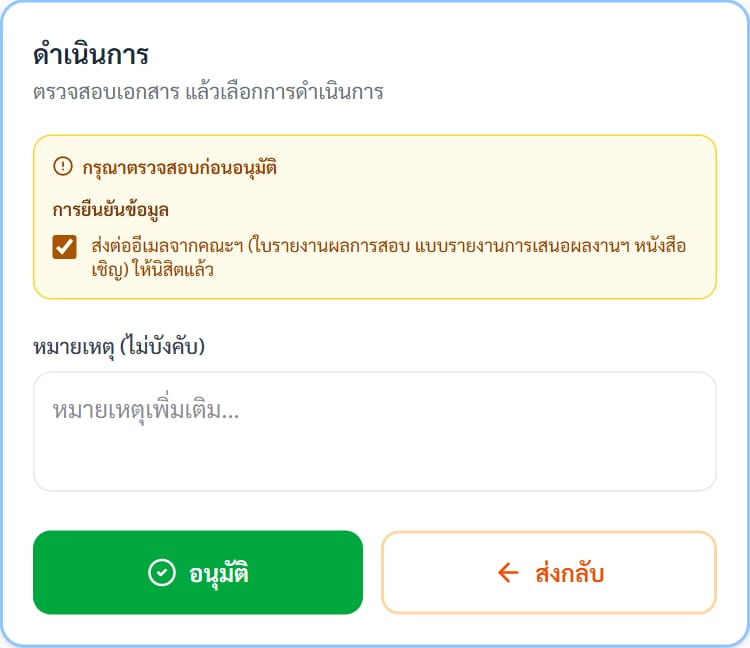
ขั้นที่ 6–8 · ผลการสอบ
อัปโหลดเอกสารหลังสอบ
นิสิตนิสิตอัปโหลดแบบรายงานฯ + ใบรายงานผลการสอบ (ฉบับว่าง) + แบบประเมินวิทยานิพนธ์ดีมาก
- แบบรายงานการเสนอผลงานฯ — กรอกและลงนามโดยนิสิต เว้นช่องลงนามของอาจารย์ที่ปรึกษาว่างไว้
- ใบรายงานผลการสอบ — อัปโหลดฉบับว่าง ไม่ต้องกรอกและไม่ต้องลงนาม อาจารย์ที่ปรึกษาจะเป็นผู้กรอก
- แบบประเมินวิทยานิพนธ์ดีมาก — อัปโหลดทุกกรณี: กรอกให้ครบหากผลการสอบเป็น ดีมาก หากไม่ใช่ให้อัปโหลดฉบับว่าง
นิสิตไม่ต้องเลือกผลการสอบ อาจารย์ที่ปรึกษาเป็นผู้เลือกในขั้นที่ 7
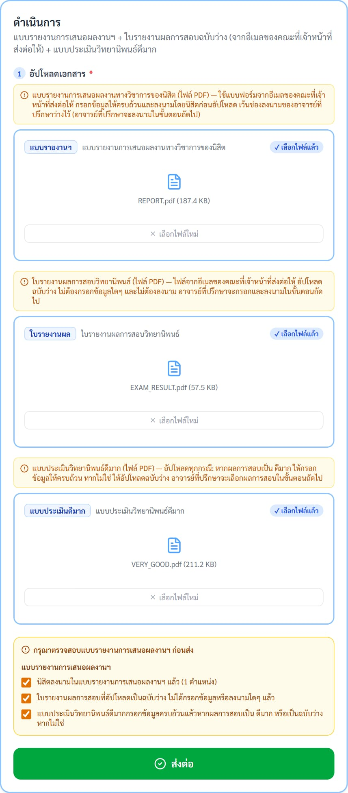
อาจารย์ที่ปรึกษาบันทึกผลการสอบ
อาจารย์ที่ปรึกษาอาจารย์ที่ปรึกษาเลือกผลการสอบ + ลงนามแบบรายงานฯ + กรอกและลงนามใบรายงานผล
- เลือกผลการสอบ: ดีมาก ดี ผ่าน หรือ ไม่ผ่าน ผลจะแสดงในลำดับขั้นตอน
- ดาวน์โหลดไฟล์ของนิสิต ลงนามในแบบรายงานฯ กรอกใบรายงานผลการสอบให้ครบถ้วนและลงนาม หากผลเป็น ดีมาก ให้ตรวจแบบประเมินของนิสิตด้วย
- อัปโหลดไฟล์ที่ลงนามแล้วทั้งสองไฟล์ ทำเครื่องหมาย แล้วกด ส่งต่อ
หากเอกสารของนิสิตไม่ถูกต้อง ให้กด ปฏิเสธ นิสิตจะอัปโหลดใหม่และยื่นอีกครั้ง
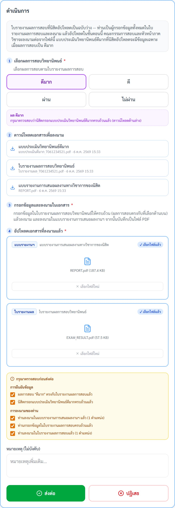
คณะกรรมการลงนามใบรายงานผลการสอบ
คณะกรรมการ8.1 อาจารย์ที่ปรึกษาร่วม → 8.2 กรรมการสอบ → 8.3 ประธานกรรมการสอบ → 8.4 กรรมการภายนอก
กรรมการแต่ละท่านดาวน์โหลดใบรายงานผลการสอบฉบับล่าสุด ลงนามในตำแหน่งของตน อัปโหลด ทำเครื่องหมาย "ท่านลงนามในใบรายงานผลการสอบแล้ว" แล้วกด ส่งต่อ บทบาทที่มีหลายท่านลงนามตามลำดับรายชื่อ เช่นเดียวกับขั้นที่ 5 ของการสอบโครงร่าง (อาจารย์ที่ปรึกษาลงนามไปแล้วในขั้นที่ 7)
ประธานหลักสูตรและนิสิตไม่ต้องลงนามในใบรายงานผลการสอบ
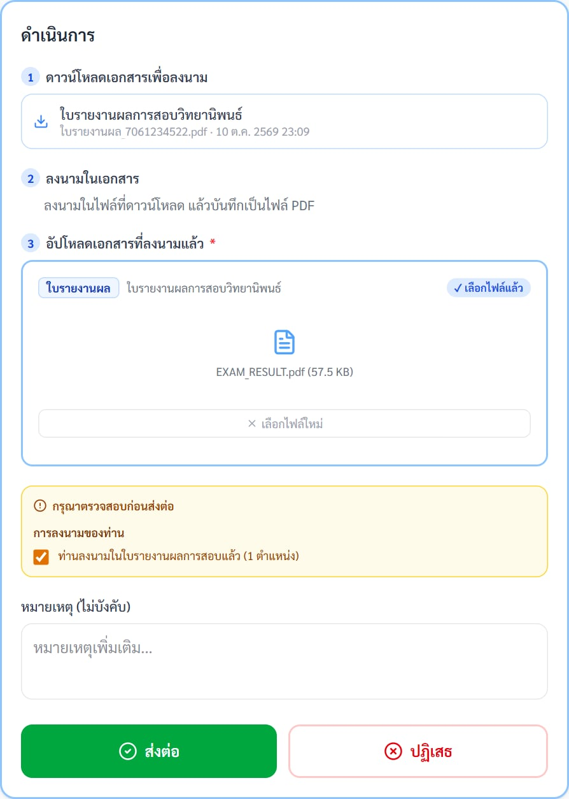
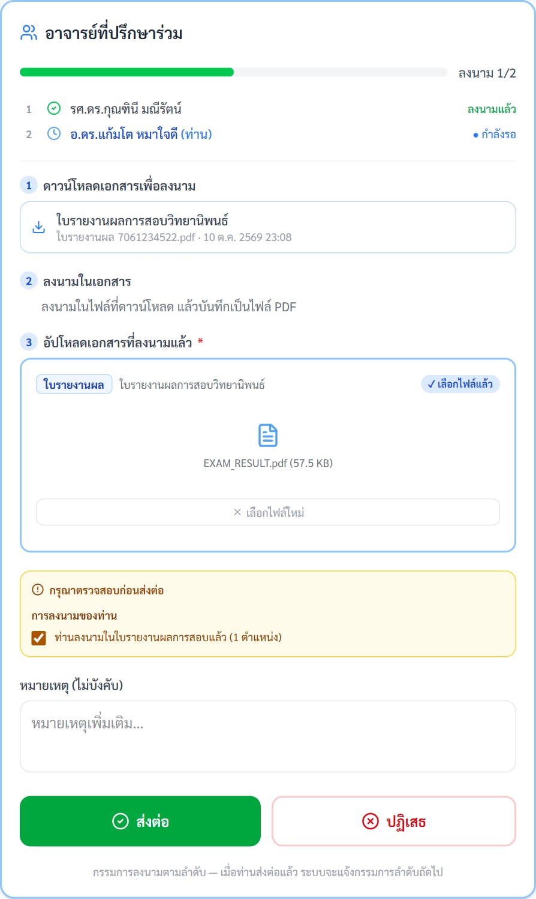
ขั้นที่ 9–11 · ส่งผลสอบไปคณะฯ
ตรวจสอบและสร้างบันทึกข้อความขอส่งผลสอบ
เจ้าหน้าที่เจ้าหน้าที่ตรวจสอบเอกสารผลการสอบ และอัปโหลดบันทึกข้อความขอส่งผลสอบ
ตรวจใบรายงานผลการสอบที่คณะกรรมการลงนามครบ และแบบรายงานฯ หากอาจารย์ที่ปรึกษาเลือกผล ดีมาก การ์ดงานจะมีกล่องสีม่วงเตือนให้ตรวจแบบประเมินวิทยานิพนธ์ดีมากด้วย จากนั้นสร้างบันทึกข้อความ ("ขอส่งผลสอบวิทยานิพนธ์") เช่นเดียวกับขั้นที่ 8 ของการสอบโครงร่าง: สร้างบันทึกข้อความ → ดาวน์โหลด .docx → บันทึกเป็น PDF → เลือกไฟล์ → ทำเครื่องหมาย → อนุมัติ
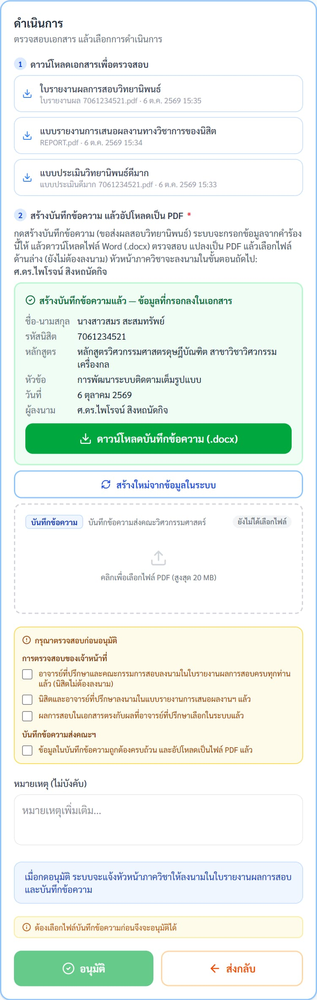
หัวหน้าภาควิชาลงนาม
หัวหน้าภาควิชาหัวหน้าภาควิชาลงนาม ใบรายงานผล + บันทึกข้อความ
มีเอกสารสองฉบับ: ดาวน์โหลดบันทึกข้อความและใบรายงานผลการสอบ ลงนามทั้งสองฉบับ อัปโหลดทั้งสองไฟล์ ทำเครื่องหมายทั้งสองข้อ แล้วกด ส่งต่อ
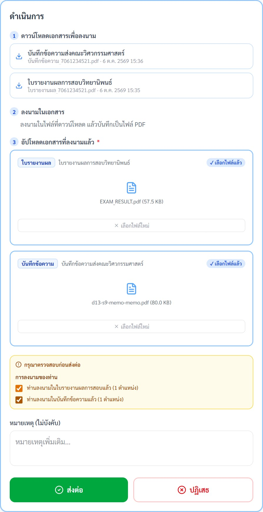
นำส่งผลการสอบไปคณะฯ
เจ้าหน้าที่เจ้าหน้าที่นำส่งใบรายงานผลการสอบพร้อมบันทึกข้อความไปคณะ และอัปโหลดเอกสารเลขรับ LessPaper
นำส่งใบรายงานผลการสอบและบันทึกข้อความที่ลงนามแล้วผ่านระบบ LessPaper อัปโหลดเอกสารเลขรับฉบับใหม่ ทำเครื่องหมาย แล้วกด อนุมัติ
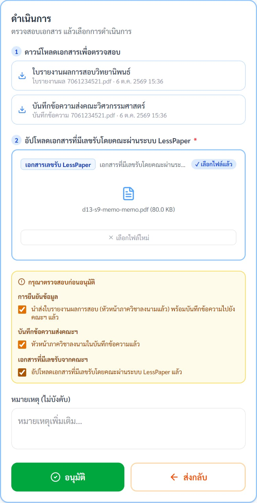
ขั้นที่ 12–17 · ส่งวิทยานิพนธ์และ iThesis
อัปโหลด บ.4 วิทยานิพนธ์ และเอกสารจาก iThesis
นิสิตนิสิตอัปโหลด บ.4 + วิทยานิพนธ์ 5 หน้าแรก + เอกสารจากระบบ iThesis (ไฟล์เดียว)
รวมเอกสารทั้งสามส่วนเป็นไฟล์ PDF ไฟล์เดียว เรียงตามลำดับ แล้วอัปโหลดในกล่อง บ.4:
- บ.4 — กรอกครบถ้วนและลงนามโดยนิสิต
- วิทยานิพนธ์ — เฉพาะ 5 หน้าแรก ที่ดาวน์โหลดจาก iThesis: ปกภาษาไทย ปกภาษาอังกฤษ หน้าลายมือชื่อคณะกรรมการสอบ บทคัดย่อภาษาไทย และบทคัดย่อภาษาอังกฤษ ต้องมีบาร์โค้ดจาก iThesis และลายมือชื่อคณะกรรมการสอบครบทุกท่าน ซึ่งรวบรวมนอกระบบ
- DOCUMENTS FOR SUBMISSION OF COMPLETE THESIS — เอกสาร 2 หน้าจาก iThesis ที่นิสิตและอาจารย์ที่ปรึกษาลงนามแล้ว
ห้ามแก้ไขวิทยานิพนธ์ในระบบ iThesis หลังดาวน์โหลดแล้ว ทำเครื่องหมายรายการตรวจสอบ 11 ข้อ แล้วกด ส่งต่อ
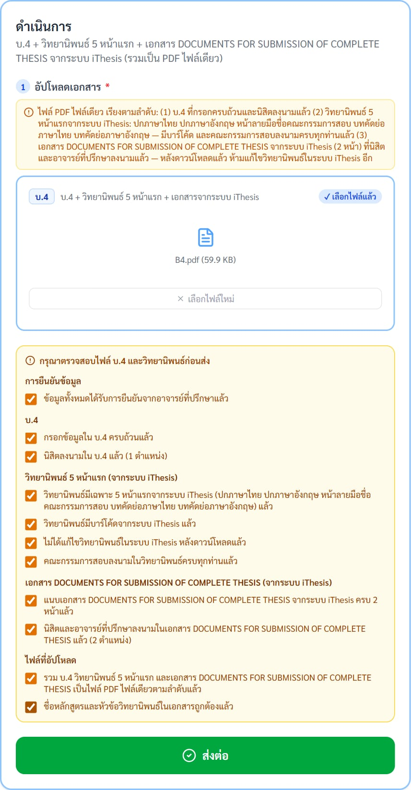
ตรวจสอบไฟล์ บ.4
เจ้าหน้าที่เจ้าหน้าที่ตรวจสอบ บ.4 + วิทยานิพนธ์ + เอกสารจากระบบ iThesis
ตรวจไฟล์ที่นิสิตอัปโหลดทั้งสามส่วน (บ.4 วิทยานิพนธ์ 5 หน้าแรก และเอกสาร DOCUMENTS FOR SUBMISSION OF COMPLETE THESIS) ทำเครื่องหมายรายการตรวจสอบ 4 ข้อ แล้วกด อนุมัติ
หากเอกสารไม่ถูกต้อง ปุ่ม ส่งกลับ จะส่งคำร้องกลับไปให้นิสิตแก้ไข
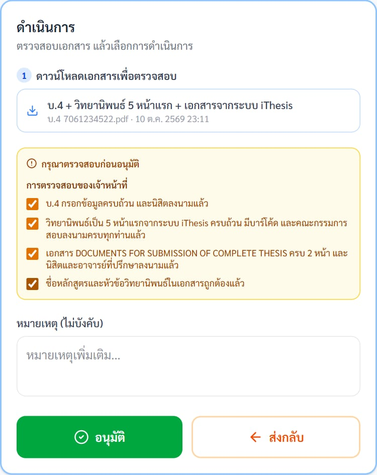
หัวหน้าภาควิชาลงนาม บ.4
หัวหน้าภาควิชาหัวหน้าภาควิชาลงนาม บ.4
ดาวน์โหลดไฟล์ บ.4 ลงนามเฉพาะหน้า บ.4 (ไม่ใช่วิทยานิพนธ์หรือเอกสารจาก iThesis) แล้วอัปโหลดทั้งไฟล์กลับเป็นฉบับใหม่ ทำเครื่องหมาย แล้วกด ส่งต่อ
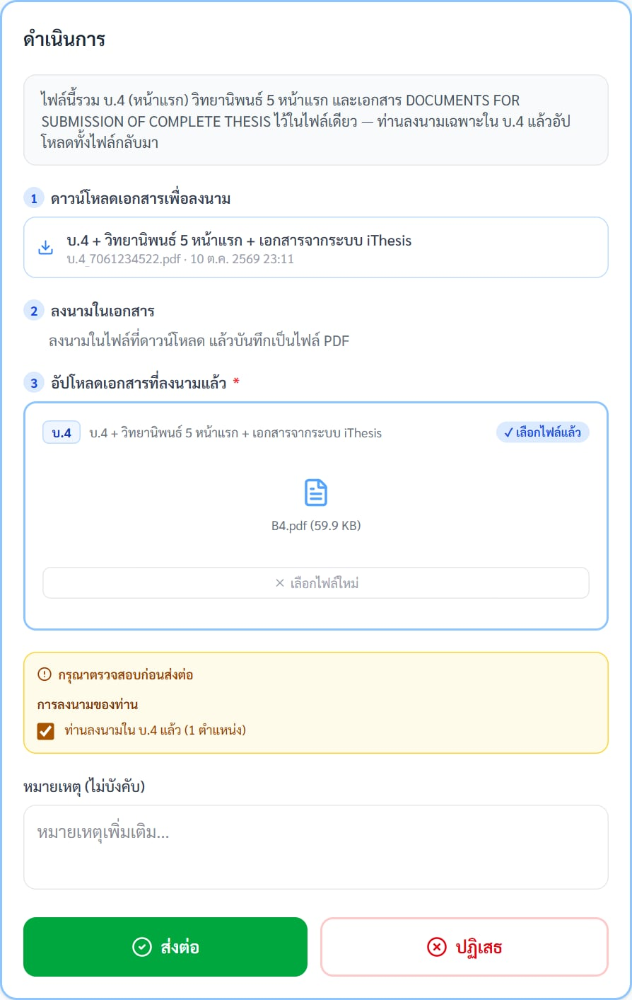
นำส่งไฟล์ บ.4 ไปคณะฯ
เจ้าหน้าที่เจ้าหน้าที่นำส่ง บ.4 + วิทยานิพนธ์ไปคณะ และอัปโหลดเอกสารเลขรับ LessPaper
นำส่งไฟล์ บ.4 ที่หัวหน้าภาควิชาลงนามแล้ว (ไฟล์เดียวในส่วน ① ซึ่งรวมวิทยานิพนธ์และเอกสารจาก iThesis ไว้แล้ว) ไปยังคณะฯ ผ่านระบบ LessPaper อัปโหลดเอกสารเลขรับฉบับใหม่ ทำเครื่องหมาย 2 ข้อ แล้วกด อนุมัติ
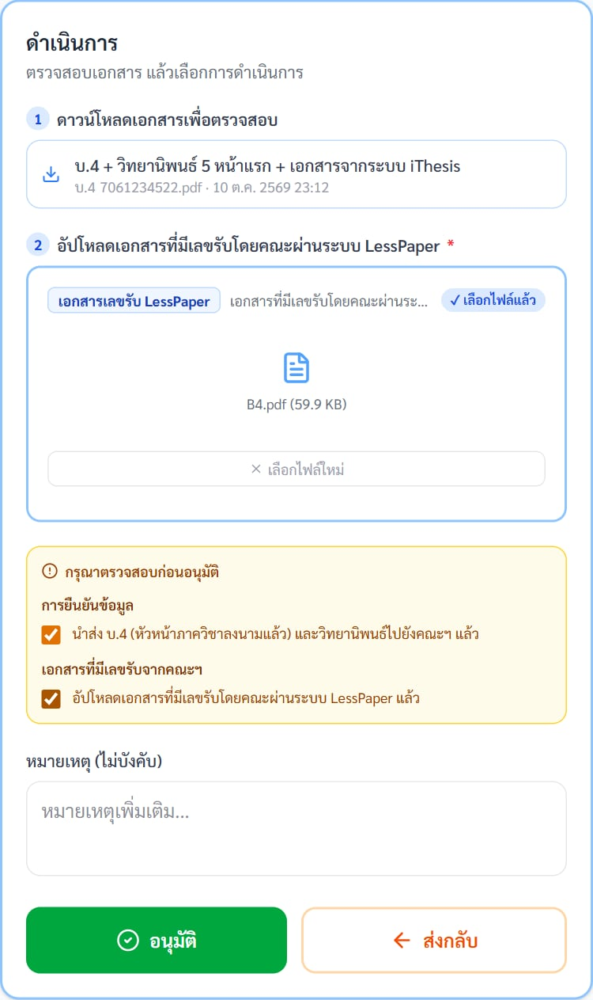
ส่งต่อเอกสารที่คณบดีลงนามแล้ว
เจ้าหน้าที่เจ้าหน้าที่ส่งต่อเอกสารจากคณะ (คณบดีลงนามแล้ว) ให้นิสิต
เมื่อคณะฯ ส่งเอกสารที่คณบดีลงนามแล้วกลับมา ให้ส่งต่อให้นิสิต แล้วยืนยันในระบบ
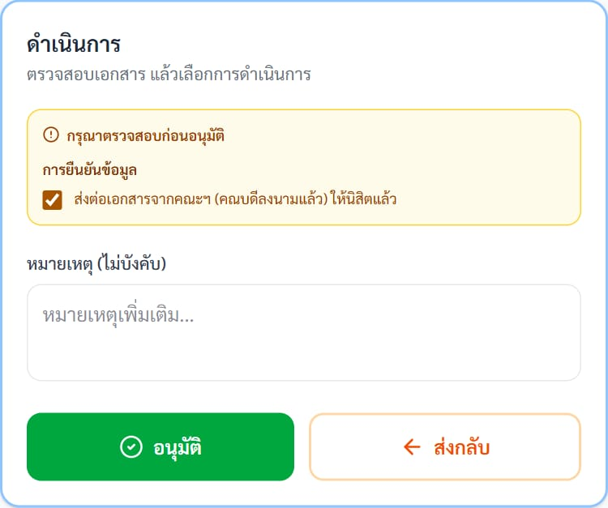
ยืนยันการส่งเข้า iThesis
นิสิตนิสิตยืนยันการส่งเอกสารเข้าระบบ iThesis
ส่งเอกสารที่ต้องใช้ทั้งหมดเข้าระบบ iThesis แล้วทำเครื่องหมายยืนยันและกด ยืนยัน ขั้นนี้ไม่มีการอัปโหลด คำร้องสอบวิทยานิพนธ์จะเปลี่ยนเป็น เสร็จสิ้น
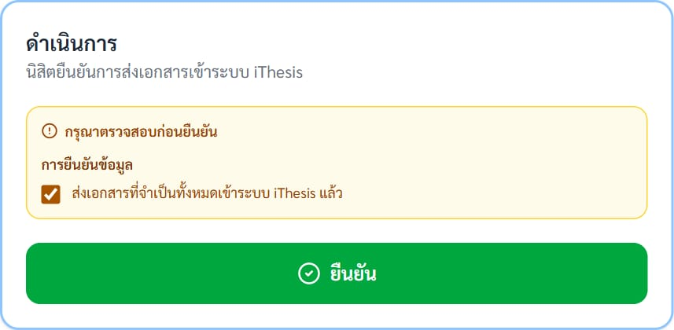
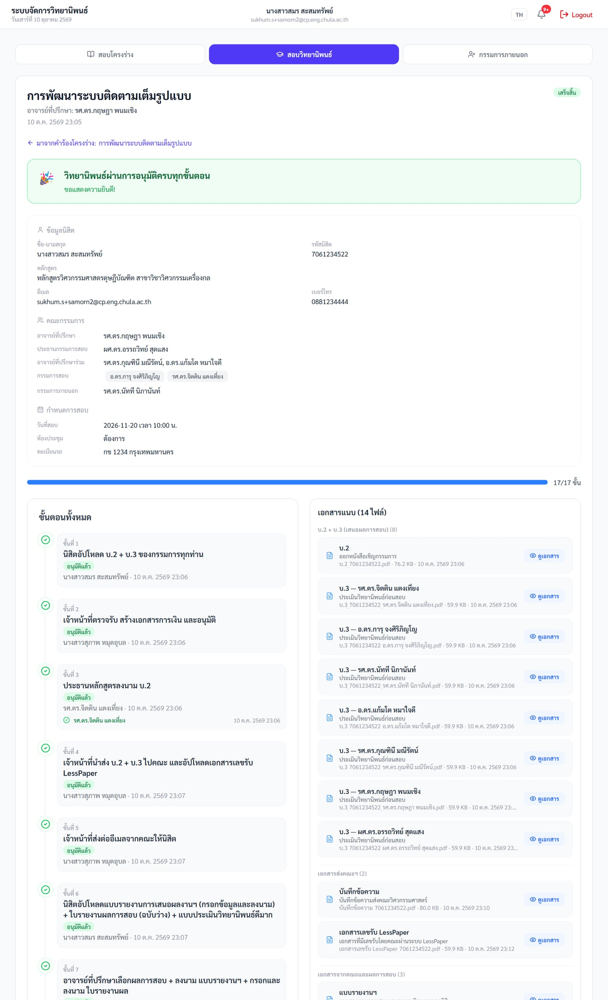
ส่วนที่ 4ถาม–ตอบ
บัญชีผู้ใช้และการเข้าสู่ระบบ
ลืมรหัสเข้าใช้งาน
ติดต่อเจ้าหน้าที่ภาควิชา เจ้าหน้าที่จะรีเซ็ตรหัสจากรายชื่อผู้ใช้งาน และระบบจะส่งรหัสใหม่ไปทางอีเมล ไม่มีการรีเซ็ตรหัสด้วยตนเอง
จะได้บัญชีผู้ใช้อย่างไร
เจ้าหน้าที่ภาควิชาเป็นผู้สร้างบัญชีทุกบัญชี บัญชีนิสิตสร้างก่อนยื่นคำร้องครั้งแรก กรรมการภายนอกจะได้บัญชี เมื่อเจ้าหน้าที่อนุมัติคำขอของนิสิต (ดูข้อถัดไป)
ไม่พบชื่อกรรมการภายนอกในรายชื่อ
กรรมการภายนอกต้องได้รับการอนุมัติในระบบ iThesis แล้วก่อนจึงจะยื่นคำขอได้ ในหน้าแรกของนิสิต เปิดแท็บ กรรมการภายนอก แล้วกรอกคำนำหน้าชื่อ ชื่อ-นามสกุล อีเมล สังกัด และเบอร์โทรศัพท์ ของกรรมการ เจ้าหน้าที่จะพิจารณาในแท็บจัดการผู้ใช้งาน เมื่ออนุมัติแล้ว บัญชีจะถูกสร้าง กรรมการจะได้รับอีเมลต้อนรับพร้อมรหัสเข้าใช้งาน และนิสิตเลือกชื่อนั้นในรายชื่อคณะกรรมการได้ นิสิตจะได้รับแจ้งผลการพิจารณาไม่ว่าจะอนุมัติหรือไม่ ส่วนบัญชีอาจารย์ภายใน เจ้าหน้าที่เป็นผู้สร้างโดยตรง หากไม่พบชื่ออาจารย์ กรุณาติดต่อเจ้าหน้าที่
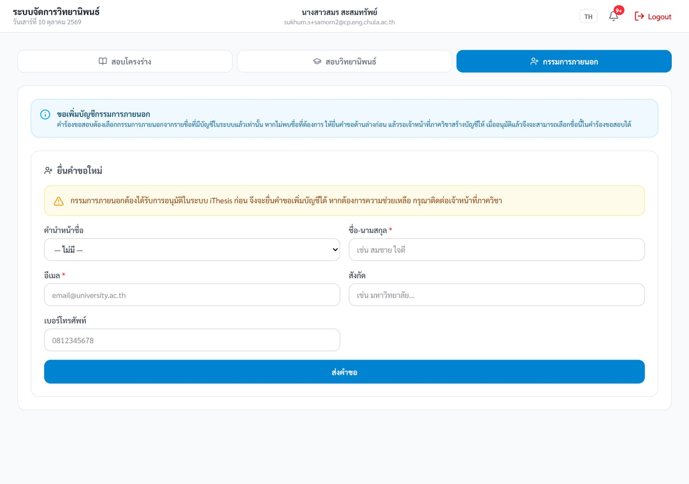
ประเภทอาจารย์ ME และ CU คืออะไร
ME คืออาจารย์ภาควิชาวิศวกรรมเครื่องกล CU คืออาจารย์จุฬาฯ จากภาควิชาอื่น เจ้าหน้าที่เลือกประเภทในช่อง ประเภทอาจารย์ เมื่อเพิ่มบัญชีอาจารย์ (ค่าเริ่มต้นคือ CU) และแก้ไขภายหลังได้จากปุ่ม แก้ไข ของบัญชีนั้น ประเภทแสดงเป็นป้าย ME หรือ CU ข้างบทบาทในรายชื่อผู้ใช้งาน และใช้ตามเงื่อนไขคณะกรรมการ (ดูข้อ "ทำไมเลือกบุคคลนี้ในบทบาทนี้ไม่ได้")
ทำไมลิงก์ในอีเมลพาไปหน้าเข้าสู่ระบบ ไม่ใช่หน้าคำร้อง
เพื่อความปลอดภัย อีเมลจะไม่พาเข้าสู่ระบบโดยอัตโนมัติ ให้เข้าสู่ระบบด้วยอีเมลและรหัสเข้าใช้งาน แล้วใช้กระดิ่งแจ้งเตือนเพื่อไปยังคำร้องได้ทันที
คณะกรรมการ
ทำไมเลือกบุคคลนี้ในบทบาทนี้ไม่ได้
จำนวนบุคคลและประเภทบัญชีที่ดำรงแต่ละบทบาทได้ขึ้นอยู่กับระดับปริญญา ตามเงื่อนไขที่เจ้าหน้าที่ตั้งไว้ (ME = อาจารย์ภาควิชาวิศวกรรมเครื่องกล, CU = อาจารย์จุฬาฯ จากภาควิชาอื่น, EX = กรรมการภายนอก) ค่าเริ่มต้นคือ:
| บทบาท | ปริญญาโท | ปริญญาเอก |
|---|---|---|
| อาจารย์ที่ปรึกษา | 1 ท่าน · ME, CU | 1 ท่าน · ME, CU |
| อาจารย์ที่ปรึกษาร่วม | 0 ท่านขึ้นไป · ME, CU, EX | 0 ท่านขึ้นไป · ME, CU, EX |
| ประธานกรรมการสอบ | 1 ท่าน · ME, CU, EX | 1 ท่าน · EX เท่านั้น |
| กรรมการสอบ | 1 ท่านขึ้นไป · ME, CU | 1 ท่านขึ้นไป · ME, CU |
| กรรมการภายนอก | 1 ท่านขึ้นไป · EX | 1 ท่านขึ้นไป · EX |
ข้อความ "เลือกจาก: …" ใต้แต่ละแถวในส่วนเลือกคณะกรรมการแสดงเงื่อนไขที่ใช้อยู่จริงเสมอ
นอกจากนี้ บุคคลที่ถูกเลือกในบทบาทหนึ่งแล้วจะไม่แสดงในบทบาทอื่น เพราะหนึ่งคนดำรงได้หนึ่งตำแหน่ง ยกเว้นประธานหลักสูตรที่ดำรงตำแหน่งอื่นได้อีกหนึ่งตำแหน่ง
แถวคณะกรรมการเป็นสีแดงเมื่อเปิดฉบับร่างอีกครั้ง
บุคคลในแถวนั้นใช้ไม่ได้แล้ว — บัญชีถูกลบ หรือท่านเปลี่ยนหลักสูตรจนบุคคลนั้นไม่ตรงเงื่อนไขของบทบาท (เช่น ประธานกรรมการสอบที่เป็นอาจารย์ หลังเปลี่ยนเป็นปริญญาเอก) ให้เลือกบุคคลอื่นหรือลบแถวนั้น ระบบจะไม่ให้บันทึกหรือยืนยันฉบับร่างจนกว่าจะแก้ไข เพื่อไม่ให้รายชื่อหายไปโดยไม่รู้ตัว
ใครเป็นผู้กำหนดลำดับการลงนาม
ลำดับแถวในรายชื่อคณะกรรมการ ลากที่จับของแถวเพื่อเปลี่ยนลำดับก่อนยืนยัน หลังจากคำร้องเริ่มดำเนินการแล้ว มีเพียงเจ้าหน้าที่ที่แก้ไขคณะกรรมการได้ (ใช้ส่วนแก้ไขแบบเดียวกัน) ขั้นที่ยังไม่เสร็จจะปรับตามรายชื่อใหม่ และการลงนามของผู้ที่ยังอยู่ในรายชื่อจะยังคงอยู่
เจ้าหน้าที่เปลี่ยนเงื่อนไขคณะกรรมการได้อย่างไร
ในแท็บ ตั้งค่าระบบ ส่วน เงื่อนไขคณะกรรมการ แต่ละแถวคือหนึ่งตำแหน่ง และแยกปริญญาโทกับปริญญาเอก เลือกจำนวน (1, ≥0 หรือ ≥1) และทำเครื่องหมายประเภทบัญชีที่รับ (ME, CU, EX) แล้วกด บันทึก ปุ่ม คืนค่าเริ่มต้น ใช้คืนเงื่อนไขเดิม
- จำนวนของอาจารย์ที่ปรึกษาและประธานกรรมการสอบเป็น 1 เสมอ (เปลี่ยนไม่ได้)
- แต่ละตำแหน่งต้องรับบัญชีอย่างน้อยหนึ่งประเภท
- ตำแหน่งที่ตั้งเป็น ≥0 และไม่มีผู้ใด ระบบจะข้ามขั้นตอนลงนามของตำแหน่งนั้นไป
- เงื่อนไขใหม่มีผลกับคณะกรรมการที่บันทึกหลังจากนั้น คำร้องเดิมไม่ถูกตรวจซ้ำ
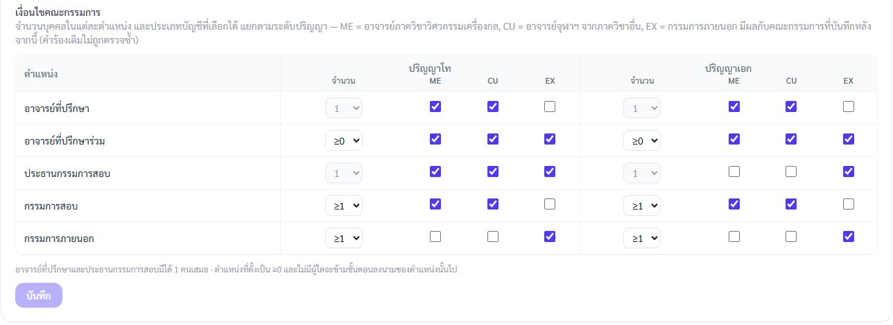
ใครเป็นประธานหลักสูตรในคำร้องของฉัน
ระบบกำหนดให้อัตโนมัติตามหลักสูตรของท่าน ตามที่เจ้าหน้าที่ตั้งไว้ในแท็บตั้งค่าระบบ นิสิตเปลี่ยนเองไม่ได้ หากช่องนี้แจ้งว่ายังไม่มีประธานหลักสูตร กรุณาติดต่อเจ้าหน้าที่ เพราะจะยืนยันคำร้องไม่ได้จนกว่าจะมี
การดำเนินคำร้อง
ขั้นตอนถูกปฏิเสธ จะเกิดอะไรขึ้น
เมื่อผู้พิจารณากด ปฏิเสธ ต้องระบุเหตุผล คำร้องจะยังอยู่ที่ขั้นเดิมและเปลี่ยนเป็น ถูกปฏิเสธ นิสิตจะเห็นกล่องสีแดงระบุผู้ปฏิเสธและเหตุผล พร้อมการ์ด แก้ไขเอกสาร ให้แก้ไขเอกสาร อัปโหลดในการ์ดนั้น แล้วกด ยื่นใหม่อีกครั้ง ผู้พิจารณาท่านเดิมจะได้รับแจ้งและพิจารณาขั้นนั้นอีกครั้ง คำร้องจะไม่ย้อนกลับไปเริ่มต้นใหม่
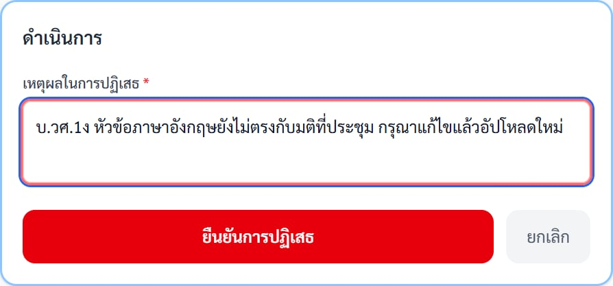
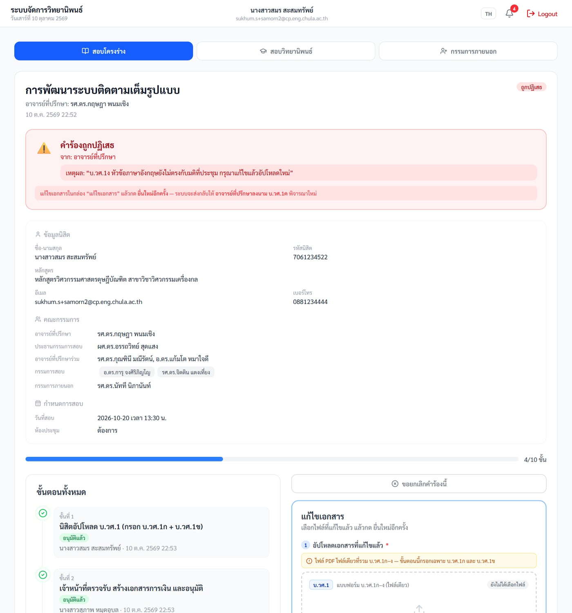
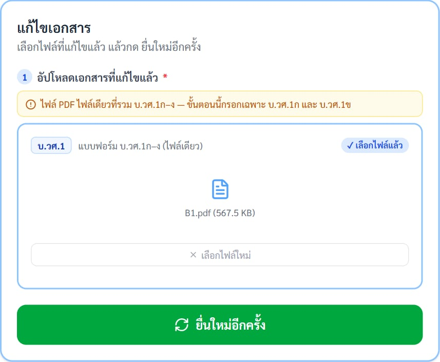
ส่งกลับ คืออะไร
เป็นการดำเนินการของเจ้าหน้าที่เท่านั้น เปิดขั้นปัจจุบันและขั้นก่อนหน้าใหม่ ผู้ดำเนินการขั้นก่อนหน้าต้องทำอีกครั้ง เช่น เมื่อผู้ลงนามอัปโหลดไฟล์ผิด เจ้าหน้าที่ยังเปิดขั้นก่อนหน้าใดก็ได้ใหม่จาก "จัดการแต่ละขั้นตอน" ในหน้าคำร้อง เหตุผลไม่บังคับและจะแสดงในการแจ้งเตือน
ผู้ลงนามที่ถูกส่งกลับไม่ต้องอัปโหลดใหม่หากไฟล์เดิมถูกต้องแล้ว การ์ดจะแสดงไฟล์ที่ท่านอัปโหลดไว้ก่อนหน้า ให้กด เปลี่ยนไฟล์ เฉพาะเมื่อต้องการแก้ไข (ยกเว้นขั้นที่มีผู้ลงนามหลายท่าน ซึ่งต้องเลือกไฟล์ใหม่ทุกครั้ง)
ปุ่มสีเขียวเป็นสีเทาและกดไม่ได้
ต้องเลือกไฟล์ที่ต้องใช้ครบและทำเครื่องหมายรายการตรวจสอบครบทุกข้อ ในการ์ดของนิสิตและเจ้าหน้าที่ ข้อความสีเหลืองเหนือปุ่มจะบอกว่ายังขาดอะไร ในขั้นที่ 4 ของการสอบโครงร่างและบางขั้นต่อจากนั้น ไฟล์ต้องใหม่กว่าขั้นก่อนหน้าด้วย หากเลือกไฟล์เก่าไว้ ให้เลือกใหม่
เลือกไฟล์ผิด
ก่อนกดปุ่ม ให้กด × เลือกไฟล์ใหม่ แล้วเลือกอีกครั้ง ไฟล์ยังไม่ถูกอัปโหลดจนกว่าจะกดปุ่ม หากกดปุ่มไปแล้ว ไฟล์จะถูกอัปโหลด ให้แจ้งผู้พิจารณาขั้นถัดไปให้ปฏิเสธ (หรือแจ้งเจ้าหน้าที่ให้ส่งกลับ) เพื่ออัปโหลดไฟล์ที่ถูกต้อง ฉบับก่อนหน้าทั้งหมดยังดูได้ในประวัติ
มีกรรมการหลายท่านในบทบาทเดียวกัน ทำไมยังลงนามไม่ได้
กรรมการลงนามทีละท่านตามลำดับรายชื่อ การ์ดของท่านแสดงรายชื่อทั้งหมด เมื่อท่านก่อนหน้าลงนามแล้ว ท่านจะได้รับแจ้ง "ถึงคิวของท่าน" ทางอีเมลและกระดิ่งแจ้งเตือน
จะยกเลิกคำร้องได้อย่างไร
กด ขอยกเลิกคำร้องนี้ ใต้คำร้อง ซึ่งเป็นเพียงการส่งคำขอถึงเจ้าหน้าที่ คำร้องจะแสดง "รออนุมัติยกเลิก" และหยุดการดำเนินการทั้งหมดจนกว่าเจ้าหน้าที่จะอนุมัติหรือไม่อนุมัติ หากอนุมัติ คำร้องจะเป็น ยกเลิกแล้ว และ (กรณีสอบโครงร่าง) นิสิตเริ่มคำร้องใหม่ได้ การยกเลิกคำร้องสอบโครงร่างจะยกเลิกคำร้องสอบวิทยานิพนธ์ที่สร้างจากคำร้องนั้นและยังไม่เสร็จไปด้วย หากไม่อนุมัติ คำร้องจะดำเนินต่อจากเดิม คำร้องที่เสร็จสิ้นแล้วยกเลิกไม่ได้
เอกสาร
หาแบบฟอร์มเปล่าได้ที่ไหน
จากหน้าดาวน์โหลดของภาควิชา me.eng.chula.ac.th/download (กล่องอัปโหลดมีลิงก์ไปยังหน้านี้) ส่วนแบบฟอร์มหลังสอบวิทยานิพนธ์ — แบบรายงานฯ และใบรายงานผลการสอบ — มาในอีเมลของคณะฯ ที่เจ้าหน้าที่ส่งต่อให้ในขั้นที่ 5 ของการสอบวิทยานิพนธ์
ระบบลงนามในเอกสารให้หรือไม่
ไม่ ให้ลงนามในไฟล์ PDF ที่ดาวน์โหลดด้วยตนเอง (ลายมือชื่ออิเล็กทรอนิกส์ หรือพิมพ์ ลงนาม แล้วสแกน) บันทึกเป็น PDF แล้วอัปโหลด รายการตรวจสอบเป็นการยืนยันว่าท่านลงนามในส่วนใดแล้ว
ทำไมนิสิตไม่เห็นเอกสารการเงิน
เอกสารการเงินของคณะกรรมการเป็นเอกสารภายในของภาควิชาและฝ่ายการเงิน จึงซ่อนจากนิสิตโดยเจตนา
เอกสารเลขรับ LessPaper คืออะไร
ระบบ LessPaper ของคณะฯ จะประทับเลขรับให้กับเอกสารแต่ละชุดที่เจ้าหน้าที่นำส่ง เจ้าหน้าที่อัปโหลดเอกสารที่มีเลขรับนั้น ในทุกขั้นนำส่ง (ขั้นที่ 10 ของการสอบโครงร่าง และขั้นที่ 4, 11 และ 15 ของการสอบวิทยานิพนธ์) เป็นหลักฐานการนำส่ง
กรณีผลการสอบ ดีมาก ต้องทำอะไรเพิ่ม
นิสิตกรอกแบบประเมินวิทยานิพนธ์ดีมาก (ในขั้นที่ 6 ของการสอบวิทยานิพนธ์ต้องอัปโหลดแบบนี้ทุกกรณี — เป็นฉบับว่างหากผลไม่ใช่ ดีมาก) อาจารย์ที่ปรึกษายืนยันในขั้นที่ 7 และเจ้าหน้าที่ตรวจในขั้นที่ 9
ใครเห็นคำร้องของฉันได้บ้าง
นิสิตเจ้าของคำร้อง คณะกรรมการทุกท่านในคำร้อง ประธานหลักสูตร หัวหน้าภาควิชา และเจ้าหน้าที่ภาควิชา ผู้ดูแลระบบสูงสุดเห็นรายการคำร้องทั้งหมดได้เช่นกัน แต่ดูได้อย่างเดียว ไม่มีสิทธิ์ดำเนินการใด ๆ ในคำร้อง ไม่มีผู้อื่น